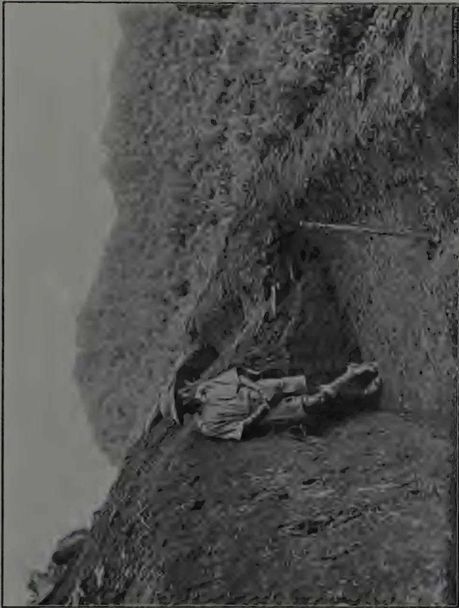
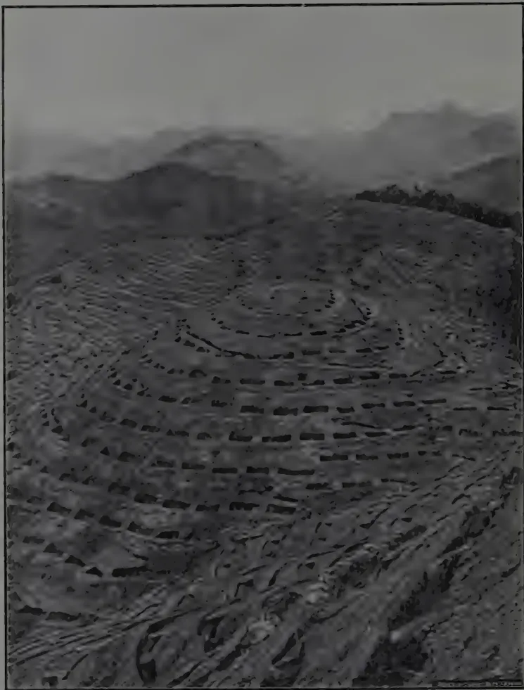
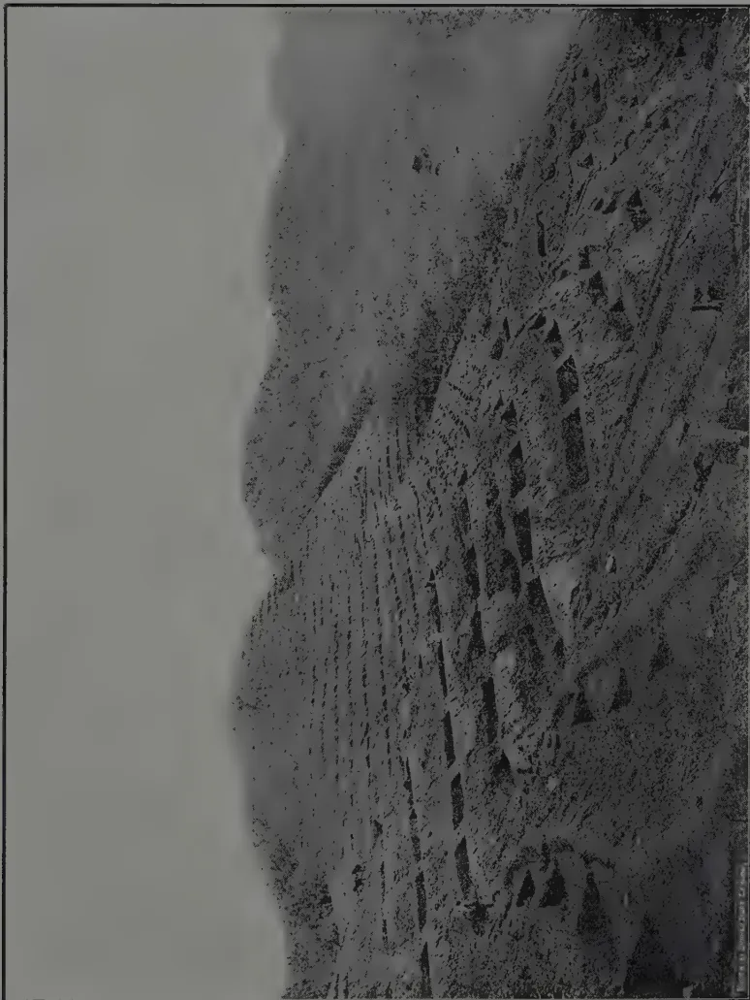
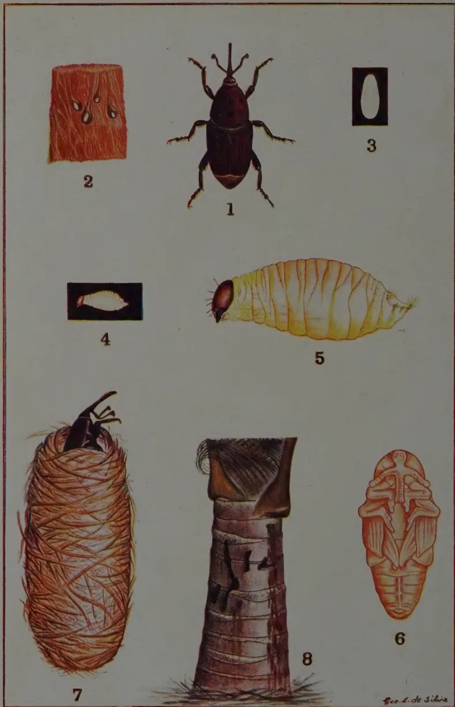

September, 1933.
THE recent improvement in the price of raw rubber is again attracting some attention to the possibilities of improving crop yields of this commodity in Ceylon plantations. There are two schools of thought associated with this aspect of improvement, those who believe in the policy of developing large areas on scientific lines, with improved trees, generally budded rubber, which involves at first, at all events, comparatively high upkeep charges, and those who believe in cheaper production on lower-yielding estates where maintenance charges are a minimum. The statistics relating to rubber production generally are by no means so accurate as they might be and figures of acreages under budded rubber in the East are very vague. There is possibly, however, not less than half-a-million acres of budded rubber now in existence of which an appreciable quantity is commencing to come into tapping.
Competent authority has estimated the yield from this half million acres when at full bearing at not less than half a ton per acre. This does not seem unlikely, as reliable statistics are now coming to hand of large areas of budded clones between nine and twelve years old giving one to two thousand pounds per acre. In Ceylon, compared with other producing countries, unfortunately we have an almost insignificant area of budded
136rubber approaching the good yielding age and but very little more of budded rubber of any age. Indo-China, where the French are now devoting considerable attention to the production of plantation and other crops has planted up considerable extents of budded clones and is well on the way toward one hundred thousand acres of such. There can be but little doubt that the future will see an increasing consumption of rubber, although that possibility will imply its utilisation as a substitute for more costly materials in every-day domestic use. It will equally imply a cheap supply of the raw material. The present problem for Ceylon plantations lies in a decision as to whether extensive adoption of budgrafting as a means of replenishing should be adopted, or, whether some method of less costly upkeep such as the forestry method is to aid the low to medium yielding trees to hold their own. Without this decision it is difficult to see how the industry can maintain its own in competition with those countries that have extensively gone in for reducing costs, and this more generally by increasing yields, should the recent improved prices be maintained or improve further. These are problems that must now attract attention. It is unfortunate that in the past much more attention was not given to these aspects and it is all the more reason why they should not be ignored now unless the industry is to be entirely left behind in the keen struggle for existence that is going on in the rubber industry. Because in the past Ceylon has been able to produce raw rubber cheaper than other countries it does not follow that she can complacently review that situation and still maintain it.
137P. R. MAY, B.A., (CANTAB.), J.P., U.P.M.,
MANAGER, DALKEITH GROUP
IT is not proposed here to go into the merits or demerits of budded rubber although its potentialities cannot be overlooked.
The Dutch by scientific research have greatly increased the yields of both Cinchona and Sugar and it is more than likely they will do the same with rubber. Although at the present time there appear to be no authentic figures giving the yields of budded rubber from any appreciable acreage, we have it on the authority of Dr. Cramer, who is one of the greatest authorities on rubber in the world today, that times the yield obtained from ordinary unbudded rubber can be reasonably expected. We also know that the Dunlop Company—whose Chairman has one of the best business brains in the world—is opening up thousands of acres in budded rubber in the Malay States.
Although it appears to be very difficult to obtain accurate figures as to the acreage and yield of Native Rubber in Java and Sumatra the potential production from this source is probably enormous.
During the restriction years 1922-1927 the Dutch were going full out for crop—making enormous profits and they undoubtedly thought that rubber was the finest money-making proposition in the world, and hundreds of thousands of acres must have been planted up with rubber during that fatal period.
We have it on the authority of Sir Cecil Clementi, the Governor of the Straits Settlements, who visited those countries a few years ago that the potential production from this source was 450,000 tons !
There is no doubt that with no overhead charges native rubber can be produced very cheaply, and if we are to compete with such we must try to increase our yields, and the best way of doing this appears to be to plant budded rubber.
138I would hesitate to advise rejuvenating on estates giving their 600-700 lb. or more per acre, as with annual or biennial manuring increased yields could be reasonably expected—at any rate in Ceylon. However, these yields are exceptional. For estates giving their 300-400 lb. per acre—and for poor areas on good estates—and on most estates a few poor areas are to be found—it is to be commended. Unless something is done to increase the yields such estates appear to be doomed.
At the present time with labour much cheaper than it has ever been before (a few years ago Sinhalese were paid anything from -/50 to Re. 1/- per day for new clearing work, whereas now they are willing to work for -/40,) rejuvenating can be done just about half as cheaply as in normal times.
For an estate of 1,000 acres yielding 500 lb. per acre, I would suggest the following programme, by which the yields could be increased by more than half.
By this programme an eventual yield of 860,000 lb. could be reasonably expected:
I estimate an acre of rejuvenated rubber can be brought into bearing in its 7th year for Rs. 350/- an acre:
| Opening | ... | ... | Rs. | 155.00 | Details on page 152 |
| 1st year | ... | ... | „ | 47.50 | |
| 2nd „ | ... | ... | „ | 32.50 | |
| 3rd „ | ... | ... | „ | 30.00 | |
| 4th „ | ... | ... | „ | 30.00 | |
| 5th „ | ... | ... | „ | 27.50 | |
| 6th „ | ... | ... | „ | 27.50 | |
| Rs. 350.00 | |||||
The programme can be regulated according to the funds available but it is essential to lay down a policy and stick to it.
Clones.—First of all it will have to be decided what clones to plant and budwood or budded stumps purchased. There are many proved clones available at cheap rates and 10 to 15 buds
139per yard of budwood can be expected. Some proved Ceylon clones should shortly be available.
The following is a list of the foreign clones with the yields claimed for them, but I cannot vouch for their authenticity.
For the purpose of comparing the yields of various clones it is best to study Table A, which gives the dry lb. per tree per year at the different ages of the respective clones.
(1) Tjirandji 1. Clones.
The highest yield yet recorded is 35 lb. per tree per year by clone Tjirandji I in its 11th year.
The record to date is: 9th year = 20.67 lb. per tree.
10th ,, = 27.5 ,, ,, ,,
11th ,, = 35.0 ,, ,, ,,
Tjirandji 16 would appear to be the next best with a record of
9th year = 23.9 lb. per tree
10th ,, = 23.8 ,, ,, ,,
11th ,, = 20.2 ,, ,, ,,
Tjirandji 8 is poor in comparison with its sister clones, the yield only being
9th year = 14.03 lb. per tree
10th ,, = 16.3 ,, ,, ,,
11th ,, = 17.6 ,, ,, ,,
Although poor in comparison with Tjirandji 16 it should not be discarded as its yields compare most favourably with the Avros and Bodjong Datar clones.
(2) Bodjong Datar Clones.
The best of these is B.D. 5 which has a fine progressive record
10th year = 18.5 lb. per tree per year
11th ,, = 25.3 ,, ,, ,, ,,
12th ,, = 26.0 ,, ,, ,, ,,
13th ,, = 26.6 ,, ,, ,, ,,
This clone, however, does not appear to be particularly suited to Ceylon owing to its susceptibility to Palmivora.
B. D. 2 and 10 both have good yields, but unfortunately both fell off in the 4th year of tapping. It will be interesting to see whether in the 1931 yields further progress is recorded.
| B. D. 2 | B. D. 10 | |
|---|---|---|
| 10th year | 15.4 | 16.7 lb. per tree |
| 11th ,, | 17.4 | 18.9 ,, ,, ,, |
| 12th ,, | 18.0 | 20.0 ,, ,, ,, |
| 13th ,, | 12.5 | 17.8 ,, ,, ,, |
Although the Avros clones do not come up to the standard of the Tjirandji and Bodjong Datar Clones they are possibly more reliable as it appears that the yields of a greater number of Avros trees have been recorded in comparison with the other two.
A study of the Avros Yields in Table A. is interesting.
Avros 256 would appear to be the best yielder in the 7th and 8th year, the only 2 years recorded in respect of this clone.
Avros 80, although not exceptionally high has a fine progressive yield over 7 years.
| 5th year | 4.10 | lb. per tree per year | |
|---|---|---|---|
| 6th | 5.10 | „ | „ |
| 7th | 7.45 | „ | „ |
| 8th | 9.04 | „ | „ |
| 9th | 9.80 | „ | „ |
| 10th | 12.55 | „ | „ |
| 11th | 13.40 | „ | „ |
Avros 49 and 50 also show steady progress over 7 years' tapping, with the exception of a slight setback in the Avros 50 in the 8th year yields.
Avros 71 and 152, although only tapped for 4 years show steady progress and high yields.
In the following Table the yields at different ages are compared.
TABLE AThe Yields are in Dry lb. per tree per Year
YIELDS| Clone | Date | 3rd | 4th | 5th | 6th | 7th | 8th | 9th | 10th | 11th | 12th | 13th |
|---|---|---|---|---|---|---|---|---|---|---|---|---|
| Budded | year | year | year | year | year | year | year | year | year | year | year | |
| Avros 33 | 1920 | — | 1.94 | 3.95 | 8.40 | 9.74 | 10.05 | 11.20 | 14.04 | — | — | — |
| 36 | 1921 | 1.47 | 3.53 | 7.10 | 8.15 | 11.72 | — | 14.35 | — | — | — | — |
| 49 | 1919 | — | — | 1.45 | 3.51 | 7.43 | 11.45 | 12.60 | 12.15 | 15.40 | — | — |
| 50 | 1920 | — | 2.15 | 5.17 | 10.65 | 11.99 | 10.40 | 10.99 | 14.21 | — | — | — |
| 52 | 1919 | — | — | 3.1 | 4.11 | 6.70 | 8.25 | 6.91 | 10.41 | 11.71 | — | — |
| 80 | 1919 | — | — | 4.10 | 5.10 | 7.45 | 9.04 | 9.80 | 12.55 | 13.40 | — | — |
| 51 | 1922 | — | — | .95 | 2.57 | 4.65 | 6.81 | — | — | — | — | — |
| 53 | 1922 | — | — | — | 7.13 | 8.83 | — | — | — | — | — | — |
| 65 | 1922 | — | — | 2.36 | 2.94 | 5.60 | 6.86 | — | — | — | — | — |
| 71 | 1922 | — | — | 2.76 | 4.57 | 7.66 | 11.00 | — | — | — | — | — |
| 152 | 1922 | — | — | 3.41 | 6.07 | 8.35 | 11.65 | — | — | — | — | — |
| 163 | 1922 | — | — | 2.76 | 4.47 | 7.35 | 8.24 | — | — | — | — | — |
| 182 | 1922 | — | — | — | — | 6.75 | 7.31 | — | — | — | — | — |
| 147 | 1922 | — | — | — | — | 3.22 | 4.96 | — | — | — | — | — |
| 256 | 1922 | — | — | — | — | 15.25 | 16.25 | — | — | — | — | — |
| T. J. 1 | 1920 | — | — | — | — | — | — | 30.67 | 27.5 | 35.0 | — | — |
| 8 | 1920 | — | — | — | — | — | — | 14.03 | 16.3 | 17.6 | — | — |
| 16 | 1920 | — | — | — | — | — | — | 23.9 | 23.8 | 20.2 | — | — |
| B. D. 2 | 1918 | — | — | — | — | — | — | — | 15.4 | 17.4 | 18.0 | 12.5 |
| 5 | 1918 | — | — | — | — | — | — | — | 18.5 | 25.3 | 26.0 | 26.6 |
| 10 | 1918 | — | — | — | — | — | — | — | 16.7 | 18.9 | 20.0 | 17.8 |
To prove that Budded rubber trees renew bark as well as ordinary trees the following experiment is quoted from an article by Dr. C. Heusser in The Archief voor de Rubber cultuur.—August, 1930.
| Clone | No. Trees Tested | Thickness of Virgin Bark @ 39 inches | Renewed bark after | ||||||
|---|---|---|---|---|---|---|---|---|---|
| 1st yr. | 2nd yr. | 3rd yr. | 4th yr. | 5th yr. | 6th yr. | 7th yr. | |||
| Avros 33 | 10 | 9.5 mm | 4.6 mm | 4.7 mm | 5.8 mm | 7.1 mm | 7.3 mm | 7.1 mm | 7.6 mm |
| 36 | 10 | 10.6 " | 4.5 " | 5.2 " | 6.7 " | 7.3 " | 7.6 " | 8.1 " | 9.2 " |
| 49 | 5 | 10.2 " | 4.9 " | 6.5 " | 7.0 " | 7.6 " | 8.3 " | 8.3 " | 10.6 " |
| 50 | 9 | 10.6 " | 4.4 " | 4.9 " | 5.7 " | 7.3 " | 7.8 " | 8.3 " | 8.7 " |
| 52 | 10 | 9.7 " | 4.1 " | 4.6 " | 5.5 " | 6.7 " | 7.3 " | 7.5 " | 8.2 " |
| 80 | 7 | 10.2 " | 4.5 " | 4.7 " | 5.6 " | 6.5 " | 7.0 " | 7.2 " | 8.4 " |
Remarks.—These bark renewals can only be regarded as extremely satisfactory, the minimum being approximately equivalent to th inch and the maximum just over inch. It is doubtful if more than a very small percentage of trees ever renew bark as thick as inch in Ceylon.
TABLE B
The Yields are in Dry lb. per tree per Year
| Clone | No. of trees | Date Budded | 6th year | 7th year | 8th year | 9th year | 10th year |
|---|---|---|---|---|---|---|---|
| 186 | 265 | 1922 | — | 11.5 | 15.25 | 22.5 | 27.5 |
| 23 | 44 | 1922 | — | 12.25 | 15. | 17.5 | 21.25 |
| 5 | 153 | 1922 | — | 9.25 | 12.5 | 16. | 18.30 |
| 180 | 211 | 1922 | — | 10. | 13.15 | 14.5 | 21.5 |
| 25 | 128 | 1922 | — | 12. | 13.6 | 15. | 19.25 |
| 24 | 94 | 1923 | 10.01 | 15.1 | 18.25 | 18.10 | — |
| 49 | 73 | 1923 | 10.1 | 12.25 | 15.90 | 18. | — |
| 123 | 173 | 1923 | 11.90 | 15.25 | 16.75 | 16.75 | — |
| 183 | 170 | 1923 | 8.75 | 12.75 | 16.25 | 19.75 | — |
| 155 | 14 | 1923 | 9.60 | 13.60 | 13.12 | 14.25 | — |
| 86 | 25 | 1923 | — | 11.85 | 16. | 18.75 | — |
| Clone | Virgin Bark | *Renewed Bark | |
|---|---|---|---|
| P.B. 23 | 9.78 m.m. | 6.7 m.m. | |
| P.B. 25 | 9.41 " | 7.65 " | |
| P.B. 186 | 11.45 " | 8.0 " | |
| P.B. 123 | 8.95 " | 6.75 " | Tapped May, 1927—measured |
| P.B. 24 | 10.51 " | 8.66 " | August, 1929, renewal for |
| P.B. 180 | 10.12 " | 7.03 " | years. |
| P.B. 155 | 8.44 " | 6.68 " | |
| P.B. 49 | 9.95 " | 6.93 " | |
| P.B. 5 | 9.4 " | 6.94 " |
*These renewals are all about 30 per cent. more than those shown for the Avros Clones.
142Nurseries.—It must be decided whether budding is to be done in the field or in the nursery. I have had experience of both and am rather undecided as to which is better.
If budding is done in the nursery, it will be necessary to find a suitable piece of land for laying down a nursery and on most estates there should be no difficulty about this. By laying down a nursery at least a year is gained, but the question arises whether this will not be made up ultimately by budding in the field. My budded areas are not yet old enough for me to form an opinion about this.
By budding in the nursery it will be necessary to transplant the budded stumps to the field. This does not arise when budding in the field.
When transplanting, success depends a great deal on weather conditions. In one case when conditions were favourable and rain fell for some days after planting, 10 per cent. only died. In another case, when no rain fell for some days after planting, as many as 25 per cent. died. In some instances it was a case of the stump dying and in others of the bud.
With regard to budding, I have obtained just as high a percentage of success by budding in the field as in the nursery, and under the former method once the bud has taken practically no failures have been recorded.
In any case it will be as well to lay down a small nursery for supplying any failures and the following method of planting is recommended:—
| Dimensions of Beds | ... | 30 ft. × 15 ft. |
| Distance between rows | ... | ft. × ft. |
| Distance between seeds | ... | 6 in. × 6 in. |
I have found that by planting double seeds at every 6 inches excellent results have been obtained.
Thinning out should take place every few months—all weak and sickly plants being uprooted—leaving a stand of approximately ft. × ft. By doing this a vigorous stock is assured which is essential for budding. It is more expensive than planting fewer seeds but is well worth it.
Multiplication Nursery.—If budded stumps are purchased these should be planted out for multiplication purposes. If budwood is purchased it will be essential to lay down a nursery
143on the plan recommended above and this should be done about one year before the budwood is purchased. After budding has taken place the young plants will be transferred to the multiplication nursery. Distance of planting—4 ft. 4 ft.
The young plants should be manured every few months with Nicifos or Ammophos and the nursery kept regularly weeded. About two yards of budwood can be expected one year after planting.
Budding.—I do not propose to go into details of the operation of budding as there are many books and articles written on the subject. However, I have found that:
(1) Plants about 1-1½ years old are the best for budding.
(2) Budding should not be undertaken during very wet or very dry weather, or when the trees are wintering.
I have had outstanding success with the budding tape as supplied by Mr. E. W. Whitelaw of Pantiya Estate and can highly recommend it.
I can recommend Mr. F. Summers' book "The Improvement of Yield in Hevea Brasiliensis" for those who wish to become thoroughly acquainted with the subject.
It must be decided what system of planting is to be undertaken, Contour Platforms, Denham Till Contour Trenches, or the ordinary method of drains, silt-pits and terraces. Having had experience of all these systems I can strongly recommend the first.
As regards costs there is very little to choose between the Contour Platforms and the ordinary method of draining, terracing, silt-pitting, and the trenches are the most expensive.
Contour Platforms are recommended for the following reasons:
(1) Once they are cut there is practically nothing to be spent on future upkeep, except for occasional washaways on steep land during very heavy downpours.
(This is only likely to happen during the first year after planting as once the green manure is established there is very little fear of washaways.)
144(2) They hold up all the water which is beneficial, especially in a dry district.
(3) When the trees come into tapping—it will be far easier work for the tappers and they should be able to tap more trees and in consequence the cost of tapping should be reduced.
(4) Supervision is much easier.
Under the old method of planting, expenditure on upkeep is never ending. No matter how strongly the terraces are built after a few years they always need repairing, and the drains and silt-pits should be cleaned out at least once a year.
As regards the Contour Trenches, they are more expensive to cut—in my experience the growth is not so good—and if they ever get filled up—it will be necessary to convert them into platforms—which will add a good deal to the cost.
Contour Platforms.—A good planting distance is 20 ft. 15 ft. i.e. 20 feet between the platforms and 15 feet between trees. This gives a stand of 145 trees per acre.
Lining.—This should be done while the old rubber is still standing and the materials required are: a road tracer, which should be accurate; a lining rope with tags at every 15 feet; a tape measure with a tag at 20 feet and the necessary pegs.
A Conductor or Kanakapulle and a few intelligent coolies can easily do this work which should be checked every now and then to see that the pegs are put in level and the distances correct.
When the land is very steep the distance between platforms should be increased to 25 feet to allow the platforms to be cut wider so that silt-pits may be put at the back if necessary.
It will be found impossible to take the contour right round the hill as on steep land it will be found to diverge and on flat to converge. It is best to break the line so that the distance between platforms is always 20 feet!
This will ensure the planting being symmetrical and is a check on the acreage.
Cost per acre including pegs Rs. 1.50.
145Holing.—It is preferable to cut the holes while the old rubber is still standing and I would recommend their being cut the year previous to planting. By doing this a certain amount of soil and leaves will find their way into the holes during the heavy rains.
Holes 3 ft. 3 ft. 3 ft. are recommended where the soil is poor—Task per cooly 3 holes a day—
Cost per acre. ... ... Rs. 20.30
Holes ft. ft. 2 ft. are recommended where the soil is good—Task per cooly 6 holes a day—
Cost per acre. ... ... ,, 10.15
If possible it should be given on contract at 14-15 cents a hole for the former, and 7 cents a hole for the latter.
Dynamiting.—If the land is at all rocky dynamiting should be done to ensure each hole being of the same dimensions so that every plant has an equally good chance of growing. If money is no object the dynamiting of each and every hole is recommended. Where dynamiting is not done the bottom of each hole should be stirred, and a crowbar 5 ft. in. is a useful tool for this work.
I have paid 7 cents a foot for drilling and blasting—cost of dynamite, fuse, detonators, etc. on estate account.
The cost per acre of this work depends upon the number of holes that have to be dynamited.
Filling Holes.—This should be done after all the uprooting and burning is finished as a certain amount of ash will then be available for putting in the holes.
Unless the soil is very washed out and exhausted there will generally be found a few inches of top soil which can be forked and utilised for filling.
It is of vital importance that the filling be done thoroughly and this work requires very careful supervision.
The following method is recommended: Sweep and collect all the leaves from the clearing and from the adjacent rubber, and also the soil from the drains and silt-pits. Fork the top soil and mix together with the leaves, and with the mixture fill the holes.
146It will be found that where the rubber is badly grown—and it is these areas which will be rejuvenated first—there will be found very few leaves and top soil and it is these areas which require special treatment.
In our case, good jungle soil was transported by the estate lorry and Adco was also used when filling the holes in these poor areas. It is expensive but very well worth it.
It is very difficult to estimate the cost of filling as it all depends on the nature of the soil and how much has to be transported, and the distance of transport by lorry and to the field.
Approximate cost of filling.—It is best for coolies to work in pairs—Holes 3 ft. 3 ft. 3 ft.—Two coolies should fill 6 holes a day.
This works out at roughly, 14 cents a hole—Cost per acre Rs. 20.30.
Holes ft. ft. 2 ft. Two coolies should fill 15 holes a day. This works out at roughly 6 cents a hole—cost per acre Rs. 8.70.
Plus cost of Adco and transport of jungle soil.
Uprooting.—It is essential that the land be thoroughly cleared up and all the trees burnt before a start is made on cutting platforms.
Elephants should be employed for uprooting. The large lateral roots will have to be cut and a gang should be employed at this some days ahead of the elephant uprooting.
A cooly should be able to cut the roots of 20-30 trees a day and a good elephant, provided the land is not too steep, should uproot 125-150 trees a day.
The work should be given out on contract—cost of uprooting, including cutting of side roots. 9 cents per tree or at 80 trees per acre—Rs. 7.20 per acre.
If there are any cases of Fomes in the area to be rejuvenated it is absolutely essential to remove all the roots, and this is very expensive. The big lateral roots should be uprooted by elephants by means of a hook on a strong chain, and the whole area deeply forked, great care being taken to see that all the small roots are collected and burnt.
147Many planters are of the opinion that in any case all the lateral roots should be taken out, but I do not think it essential.
Most rubber in Ceylon was originally planted 15 ft. 15 ft. or a stand of a little over 200 trees per acre. At the present time most estates average round about 90, and well over 100 trees per acre have been cut out. In a good many cases coolies were employed for this work and it was very imperfectly done.
Generally speaking Fomes is not very prevalent in Ceylon and in most cases where it is so it is generally on old tea land. Personally I do not think that the cutting out of the old rubber has been the cause of much Fomes.
Cutting up, Heaping and Burning.—After the uprooting is finished the whole area has the appearance of felled jungle.
A gang should be employed at cutting up immediately behind the elephant uprooting—as the trees are far easier to cut when green. The trees should be cut into 12-15 feet lengths and then stacked into large heaps with the small branches, etc. at the bottom and the trunks on top.
Elephants were tried for heaping, but it was found that it could be done cheaper by coolies as the logs can be easily removed by levering.
The best time to do the uprooting, cutting up and heaping is in December-January, and by the time the hot weather sets in in February-March, the heaps are ready for burning.
| Cost of cutting up in lengths | 3 cents a tree | |
| Cost of heaping and burning | 7 ,, ,, | |
| — | ||
| 10 ,, ,, | or at 80 | |
| trees per acre—Cost per acre, Rs. 8/-. | ||
The uprooting, cutting up and burning can be given out on contract at say 20 cents a tree or Rs. 16/- per acre.
If the block to be rejuvenated is near a river or cart road it may be possible to get a firewood contractor to do this work for nothing.
Cutting of Platforms.—As stated previously the planting distance recommended is 20 ft. 15 ft., i.e. 20 feet between platforms and 15 feet between trees. If the land is very steep
148the distance between platforms should be increased to 25 feet to allow the platforms to be made wider so that silt-pits can be cut at the back of them if considered necessary.
On steep land the breadth of platforms should be 7 feet and on flat and undulating 6 feet.
The height of the platforms will vary according to the lie of the land—on very steep land 6 ft. to 8 ft.—on undulating 3 ft. to 6 ft. and on flat 1 ft. to 3 ft.
The photos accompanying this article will give a very good idea of the contour platform system.
It will be seen that it is a succession of small platforms in the middle of each of which the tree is planted.
The dimensions of the platforms are approximately 12 feet long by six feet broad, the height depending on the lie of the land.
It is essential to build bunds at the edge of the platforms. This increases the water-holding capacity and minimises the risk of washaways.
Any available stone can be used for building the bunds; and if stone is not available earth can be used.
The bunds should be approximately one and a half feet high and one and a half feet broad.
A considerable saving is effected in cutting the platforms by leaving a strip—3 feet wide on steep land, and 4 feet on undulating—uncut—midway between the holes. Water which runs down the slope is guided into the platforms by the bund along the edge.
These blocks in the platforms also serve a useful purpose in preventing lateral flow of water in the event of a washaway at one portion of the platform.
When a start is to be made on the actual cutting, pegs should be put at 4 to 6 feet above the top side of each hole and joined together by a rope. This is to give the coolies an idea where the cutting is to be done. The bank should be cut on a slope—which will vary according to the height.
The bed of the platform should also be cut sloping back to the cutting face, the difference being approximately feet. This ensures the water being collected at the back of the platform.

A black and white photograph showing a geological platform. In the foreground, a person is sitting on the ground, looking towards the right. The platform is a flat, sloping area of earth and rock. In the background, there are steep, rocky hills or mountains. The image is framed by a thin black border.Platform showing Height of Cuttings
The stump will be seen to be more to the outside than the inside. The platform slopes back to the bank. Note the bund on the outside edge of the bed,

A black and white photograph showing a hillside with a series of concentric, terraced contour platforms. The terraces are built into the slope, following the natural curves of the land. The foreground shows the rough, uneven texture of the soil and the edges of the terraces. In the background, a range of mountains is visible under a hazy sky. The overall scene depicts a landscape management technique for erosion control or soil conservation.Contour Platform on average lie of land
149It is essential to have the holes more on the outside than on the inside of the bed so that the young plant will not be water-logged during heavy rains.
Cutting Platforms.—I have found that the simplest method of paying for this work is by the linear foot.
I have paid 2, and 3 cents per foot according to the steepness of the land and the amount of cutting to be done.
There are 43,560 square feet in an acre and platforms are 20 feet apart.
At every 15 feet blocks of 3-4 feet are left uncut or approximately 25 per cent. of the area; so the number of linear feet to be cut is 1634, (e.g.).
At an average—say of cents per ft. = Approximately Rs. 40/- per acre.
Terracing and Silt-pits.—It will be found that on very steep land it will be essential to build terraces.
On such places silt-pits should also be cut at the back of the platform.
Approximate cost per acre Rs. 5/-.
Forking.—As soon as a few acres of platforms are cut I would strongly recommend deep forking them.
If this is done, even during very heavy downpours, there will be very little water standing in the platforms and the fear of washaways is greatly diminished.
Roughly, the cubic capacity of the platforms is increased by the depth of the forking.
A cooly can fork approximately 25 platforms a day and I have paid at the rate of cents per platform or at 145 platforms per acre Rs. 2.18—say Rs. 2.50 per acre including Head Money, etc.
150Green Manure.—As soon as a few acres of platforms are cut, green manure should be planted and I recommend the following mixture:
| Centrosema plumieri | ... | ... | 40 oz. |
| Centrosema pubescens | ... | ... | 16 ,, |
| Calopogonium | ... | ... | 16 ,, |
| Pueraria javanica | ... | ... | 8 ,, |
80 oz. |
|||
at the rate of 5 lb. per acre.
On flat and undulating land good results have been obtained by broadcasting.
On steep land small beds should be made with a rough terrace at the back, midway between platforms at every 6 feet.
Besides the cover crop the following are recommended:
Crotalaria—3 varieties.
Tephrosia candida.
Tephrosia vogelii.
Leucaena glauca.
Clitoria.
at the rate of one pound of each kind per acre. When they are grown up they should be lopped and the loppings forked in for creating humus.
Contrary to expectation the green manure has grown well in the earth cut out from the platforms but to ensure complete success about 2 cwt. per acre of Ammophos should be applied at the time of planting.
Planting.—If it is decided to do the budding in the field it will be necessary to collect seeds and lay down germinating beds. A few platforms near a spring or stream can be used for these.
When transplanting from the beds to the field care must be taken to see that none of the shoots are broken.
I strongly advocate planting 4 seeds in each hole, and gradually thinning out the weak ones.
I have found that by manuring the young seedlings every few months with a mixture of 400 lb. of Sulphate of Ammonia and 100 lb. of concentrated Superphosphate at the rate of 2 to 4 oz.

A black and white photograph showing a steep, terraced hillside. The terraces are built into the slope, creating a series of horizontal steps. The vegetation is sparse, and the overall appearance is rugged and industrial. The sky is overcast and grey. The image is framed by a thin black border.Contour Platform on steep land
This image is a scan of a blank page. The background is a uniform light gray. There are a few very small, dark specks scattered across the surface, which appear to be scanning artifacts or dust particles. No text, lines, or other graphical elements are present. 151a plant, excellent results have been obtained, and two to three vigorous plants remain for budding. This ensures the operation of budding being highly successful and the spare plants can be utilised for the following year's clearings. The young plants should be ready for budding about 1-1½ years after planting.
By this method a supply nursery can be done away with.
Slaughter Tapping.—As far as I know no satisfactory system has yet been discovered. It is claimed by some that 2½ times the normal yield can be obtained by slaughter tapping but this has not been my experience. I agree that a considerable increase in yield can be obtained for a few months, but not for a longer period.
I have tried several systems:
In all these systems—except No. 5—I have found that after a few months' tapping—the rubber content falls to such an extent that over any considerable period more rubber is obtained by the ordinary one cut half-spiral alternate day system.
In most cases the rubber content of the latex has fallen from 3 lb. 6 oz. per gallon to under 2 lb.
Under system 5 the rubber content has remained more or less constant at about 3 lb. 6 oz. per gallon for over a year. I consider this system is the best for tapping to death, and for two months before uprooting tap both sides of the tree on alternate days.
152Assuming that the lie of land is partially steep and partially flat and undulating and that there is some poor soil, I estimate an acre can be brought into bearing in its seventh year for the following:
| Supervision including opening fees | ... | Rs. | 20.00 |
| Nurseries | ... .. | „ | 2.50 |
| Lining | ... .. | „ | 1.50 |
| Holing | ... .. | „ | 12.50 |
| Dynamiting (including cost of dynamite, drilling and blasting) | ... .. | „ | 7.50 |
| Filling holes | ... .. | „ | 12.50 |
| „ „ extra for Adco and Jungle Soil | „ | 5.00 | |
| Uprooting, Cutting and Burning | ... | „ | 16.00 |
| Cutting of platforms | ... .. | „ | 40.00 |
| Terracing and Silt-pits | ... .. | „ | 5.00 |
| Green Manure | ... .. | „ | 5.00 |
| Collecting Seeds and Planting 4 seeds to a hole | „ | 2.00 | |
| Fencing | ... .. | „ | 12.00 |
| Tools | ... .. | „ | 3.00 |
| Surveying | ... .. | „ | 2.00 |
| Weeding for six months | ... .. | „ | 6.00 |
| Forking Platforms | ... .. | „ | 2.50 |
| Rs. | 155.00 |
| Weeding | ... .. | Rs. | 12.00 |
| Budding | ... .. | „ | 12.50 |
| Manuring | ... .. | „ | 10.00 |
| Forking in Green Manure | ... .. | „ | 5.00 |
| Repairing Washaways, etc. | „ | 5.00 | |
| Supplying | ... .. | „ | 3.00 |
| Rs. | 47.50 |
| If budding is done in the nursery the cost of budding Rs. 12.50 should be included in the opening expenditure and deleted from 1st year's upkeep. | 1st year upkeep | Rs. | 47.50 |
| 2nd „ „ | „ | 32.50 | |
| 3rd „ „ | „ | 30.00 | |
| 4th „ „ | „ | 30.00 | |
| 5th „ „ | „ | 27.50 | |
| 6th „ „ | „ | 27.50 | |
| Rs. | 350.00 |
As regards the subsequent year's upkeep, the weeding, supplying and repairing washaways will gradually decrease and the saving effected under these headings can be spent on extra manure and cultivation.
153CONTRIBUTION FROM THE RUBBER RESEARCH
SCHEME (CEYLON)
"DOUBLE-CUT" TAPPING SYSTEMS
IN CEYLON
R. K. S. MURRAY, A.R.C.S.,
MYCOLOGIST, RUBBER RESEARCH SCHEME (CEYLON)
FOREWORD
DURING the past two or three years a number of Ceylon estates have adopted "double-cut" tapping systems whereby the trees are tapped on two half-spiral cuts on opposite panels, either every three days with a periodic rest ("Double-Three" or "Sunderland" system), or every four days without a resting period ("Double-Four" or "Healey" system). Introduced at a time of acute depression with a view to effecting an economy in the cost of tapping, these systems have proved so satisfactory on some estates that their mentors regard them as permanent successors to the normal system of alternate day tapping on one half-spiral cut. In the absence of data from field experiments of any considerable duration the Rubber Research Scheme, in reply to numerous enquiries, has adopted an attitude of cautious approval. The opinion has been expressed that in most districts either system may safely and advantageously be adopted under present economic conditions in order to reduce tapping costs, but that it is yet too early to say whether they are likely to prove suitable for permanent adoption.
In order to obtain as much information as possible from estates which have adopted one or other of these tapping systems a questionnaire was circulated in March, 1933, to all Proprietors and Superintendents who have registered for the receipt of Research Scheme publications. The response to this questionnaire was very satisfactory, and we are indebted to Proprietors and Superintendents for a considerable mass of valuable information, observations and opinions. The conclusions expressed in this report are based partly on these replies and partly on observations made by officers of the Research Scheme. A strict analysis of the replies is not presented; this would not be of any great value and might, indeed, be somewhat misleading since equal weight cannot be given to observations based on long experience and those made after only a few months' trial.
154An analysis shows that on the great majority of estates on which the double-cut systems are employed their adoption only dates back to 1932. Most of the results obtained are therefore based on not more than about one year's usage. Since an essential feature of the Double-Three system is the periodic rest, usually occurring once a year or once in eighteen months, the true effects cannot be evaluated until a full cycle has been completed. Any conclusions based on the replies to the questionnaire must therefore be of a tentative nature, and the Research Scheme will not be in a sound position to make definite recommendations until at least a further year has elapsed. These remarks are clearly less applicable to the Double-Four system which does not involve a resting period.
Question 1 in the questionnaire asked "What tapping system is normally employed?"
On the great majority of estates the normal system was alternate day tapping on one half-spiral cut (left to right), with variations as regards change of panel, and this system is taken as the standard with which the double-cut systems are compared.
Question 2. "Have you recently adopted any other system or systems, and if so, what?"
Question 3. "Over what acreage has this/have these systems been employed?"
The following figures show the incidence of the double-cut systems as revealed by the replies to the questionnaire:—
| Estates which have at any time adopted Double-Three system | ... | ... | 66 |
| Estates which have at any time adopted Double-Four system | ... | ... | 11 |
| Estates which have at any time adopted both Double-Cut systems | ... | ... | 5 82 |
| Estates which have not adopted either system (including 45 estates out of tapping). | 92 | ||
| Total number of estates from which replies were received | ... | ... | 174 |
| Total number of estates to which questionnaire was circulated | ... | ... | 339 |
The Double-Three system must be sub-divided according to the length and frequency of the resting period. Either half of the estate is tapped and the other half rested in rotation (A.B.), the unit period being four, six or twelve months; or one-third is rested in rotation (A.B.C.) for three, four or six months. The following figures show the number of estates and areas over which the different variations have been adopted.
| System | No. of Estates | Acreage | |
|---|---|---|---|
| Double-Three | |||
| A.B. { | 12/12 | 2 | 1,785 |
| 6/6 | 27 | 17,793 | |
| 4/4 | 2 | 668 | |
| A.B.C. { | 12/6 | 13 | 9,443 |
| 8/4 | 8 | 3,272 | |
| 6/3 | 3 | 1,298 | |
| No rest | 1 | 83 | |
| Resting period not stated | 15 | 4,751 | 39,093 |
| Double-Four | 16 | 7,415 | |
| Total Double-Cut systems | 46,508 | ||
It is difficult to ascertain to what extent the above figures represent the total incidence of the double-cut systems in Ceylon. The circulation of the questionnaire was limited to estates which had registered for the receipt of Research Scheme publications, and of these estates only about half the number submitted replies. It may be presumed that of the estates which did not reply the majority have not departed from their normal tapping methods, but on the other hand several estates are known which are employing a double-cut system but which are not included in the above analysis. The area of estate Rubber in tapping at the present time is not known with any accuracy and the proportion of this area which is being tapped under the double-cut system must at present remain a matter for conjecture. Since the questionnaire was circulated several new estates are known to have adopted double-cut tapping, and others, which were experimenting with the systems on a small scale, to have extended the acreage. It is anticipated, therefore, that at the end of 1933 the total area tapped by the double-cut systems will considerably exceed 50,000 acres and that the increase will chiefly occur in the more recently introduced Double-Four system.
156The figures show that the most popular variation of the Double-Three system is that by which half the estate is tapped and half rested for six months in rotation. In the drier districts the shorter tapping periods are preferred, the trees in no case being tapped for as long as twelve months in succession. The relative merits of the different cycles are discussed below.
Question 4. "For what length of time has this/have these systems been employed ?"
Estates are classified below according to the year in which the double-cut system was initiated.
| Year | Double-Three | Double-Four | |
|---|---|---|---|
| 1930 | ... | 1 | — |
| 1931 | ... | 10 | — |
| 1932 | ... | 51 | 8 |
| 1933 | ... | 4 | 8 |
| Not stated | ... | 5 | — |
It is seen that the majority of estates adopted the Double-Three system in 1932, the Double-Four system being the more recent introduction. As is pointed out above the first cycle under the Double-Three includes a period during which the trees have not had the benefit of a previous rest, and the results of the first year are therefore not fully representative. In considering the figures for yield etc. greater importance is therefore attached to the results obtained from the few estates which have tapped in the second and succeeding cycles, than from the many estates on which the initial period is still included.
Question 5. "Age of trees tapped by new system?"
This question was asked in order to determine whether the double-cut systems were equally suitable for trees of all ages. Most of the information refers to fully mature trees, and no tapping results or expressions of opinion are given regarding the suitability of the Double-Three system in young clearings. One instance of Double-Four tapping in a seven year old clearing is, however, cited, and the promising yields obtained in the first two tapping years indicate that this system is probably well suited to young seedling trees. No opinion can be expressed as to whether two cuts with the shorter interval will prove too severe for young trees.
157YIELDQuestion 6. "What yield per acre has been obtained as compared with normal system?"
Question 7. "What yield per tapper has been obtained as compared with normal system?"
The answers to these questions have usually involved a comparison between the period (year, years or months) of double-cut tapping and a corresponding earlier period under the normal alternate day system. Uncontrolled comparisons of this nature are far from satisfactory, but in the absence of any data from well designed field experiments such are the results on which conclusions must at present be based. The results will become increasingly reliable as the local variations caused by weather conditions, out-turn of tappers etc. become smoothed over by time.
In the figures given below the yield per acre per annum is expressed as a percentage of the full yield under normal alternate day tapping, the yield being calculated over the whole area, including the portion being rested. The average figure, calculated on an estate rather than on an acreage basis, and the limits of variation are given for each system, all variation of Double-Three (A.B.) and of Double-Three (A.B.C.) being grouped together. The yield per tapper taken together with the comparative size of the tapping task, has been used to confirm the figures given for yield per acre; in cases where the replies to the two questions do not appear to tally it is supposed that the total number of tapping days in the two periods under comparison must have been markedly different.
| System | Average | Limits of Variation | |
|---|---|---|---|
| Double-Three A.B. | ... | 77% | 55-97% |
| Do. A.B.C. | .. | 93% | 80-107% |
| Double-Four | ... | 100% | 80-114% |
Discussion. (a) Double-Three System.—The above figures show that the average yield under A.B. tapping is 77 per cent., and under A.B.C. 93 per cent. of the full normal crop. The large degree of variation exhibited can be explained by the short period over which most of the comparisons were made, local variations being thus brought into greater prominence, and the fact that the observations are recorded from many districts.
158On the majority of estates the results include the initial period during which the trees have not received the benefit of the periodic rest, and it therefore seems reasonable to suppose that in future years the yields will reach a higher figure. This is indeed borne out by an analysis of those estates on which the system has been in employment for more than a year, the proportions of the normal crop for these estates averaging 79 per cent. and 96 per cent. for A.B. and A.B.C. tapping respectively. It is significant that on the few estates which have two years' results to show, the yields obtained in the second year are always higher than those in the first.
Most of the results with the double-cut systems were obtained in 1932 which, owing to exceptionally wet weather in the last five months, was an unfavourable year for crop in most districts, and many Superintendents state that under normal conditions a larger crop would have been harvested. Thus on this account, also, the average figures from the questionnaire for percentage of normal crop are probably rather low.
Turning to the variations in the length of the resting period, estates which have adopted the A.B. system have mostly shown preference for a six month unit period. The two estates which are tapping for a year and resting for a year report satisfactory results, and it would appear that the twelve month period is not too long in wet districts. There is no evidence of any material difference in yield between the three variations of the A.B.C. system i.e. 12/6, 8/4 and 6/3. Whereas tapping for a year and resting for six months (12/6), with the less frequent change involved, is probably best suited to a wet district, the shorter periods are rightly given preference in drier localities. When selecting the most suitable cycle for any particular estate other considerations such as rubber content (discussed below) must be taken into account.
To sum up, the information that is at present available indicates that in the main low-country districts the Double-Three system, after it has been in force for a full cycle, may be expected to yield about 80 per cent. or 100 per cent. of the full normal crop according as to whether the A.B. or A.B.C. system of periodic rest is employed. The suitability of the double-cut systems in dry districts and at high elevations is discussed later under a separate heading.
159.(b) Double-Four System.—The average yield per acre per annum from this system, as judged by the replies to the questionnaire, is 100 per cent. of that under normal alternate day tapping. This figure, however, includes one estate in a dry district from which very poor results are recorded; if this estate is excluded the average yield is 103 per cent. Most of the estates from which the results have been obtained have adopted the system for less than a year, and no great reliance can therefore be placed on the comparison with alternate day tapping. It would appear, however, that a slightly increased crop may be expected by the Double-Four system. Theoretically the total number of cuts is exactly the same as with normal alternate day tapping, and it is probable that the slightly higher yield is partially due to the greater amount of latex that can be collected in a hurry when “washouts” occur in wet weather. This advantage applies, of course, to any form of double-cut tapping.
Question 8. “How many trees are allotted per tapper's task as compared with normal system?”
Since two cuts are tapped on each tree it is clear that the number of trees in a tapper's task must be less than when one half-spiral is tapped. Experience shows that about two-thirds of the normal task is the most economic figure, though this will vary according to the climate and terrain. The following figures give the average number of trees, and limits of variation, for the two types of tapping, Double-Three and Double-Four systems being considered together.
| Double-Cut | Half-spiral | Alternate Day | |
|---|---|---|---|
| Average | 135 | 208 | |
| Limits of Variation | 110-175 | 150-300 |
Question 9. “What is the cost of tapping as compared with normal system?”
The replies to this question are not very informative as the comparison is usually complicated by lowered wage rates. Taking the average figures for yield and size of task (as above), the costs of tapping for the double-cut systems expressed as percentages of half-spiral alternate day tapping are calculated theoretically as under:—
| Double-Three | Double-Four | |
|---|---|---|
| A.B. | A.B.C. | |
| 65% | 72% | 75% |
The cost of tapping is admittedly not a figure which can be very satisfactorily worked out on paper, but it is nevertheless clear that by adopting one or other of these double-cut systems a substantial economy in tapping costs can be effected. A comparison between the three percentages shown is hardly justified as the relation between yields obtainable by the different double-cut systems is not yet clearly established. It does appear, however, that the lowest tapping cost is associated with the Double Three (A.B.) system, though this may be offset by the higher proportion of overhead charges due to the smaller crop.
Question 10. "Have you made any observations regarding bark renewal as compared with normal system?"
The replies to this question are mostly favourable and no adverse opinions are expressed. In the early stages of renewal, however, it is hardly possible to compare differences amounting to less than a millimetre without making actual measurements on a representative number of trees. Such measurements have been made on a few estates, and the figures for thickness of renewing bark are in all cases higher for the double-cut system in question than for normal alternate day tapping. The methods employed, however, where stated, are open to criticism and it is not felt that a clear case for improved bark renewal has yet been established. The importance of this aspect of the tapping systems, if they are to be permanently employed, need hardly be stressed. The matter is receiving the close attention of the Research Scheme, and in the meantime we may say that observations so far recorded indicate that bark renewal is at least equal to that under half-spiral alternate day tapping.
Question 11. "What is the bark consumption as compared with normal system?"
The following figures show the average bark consumption and limits of variation expressed as a percentage of the consumption under half-spiral alternate day tapping. It will be noted that there is a large variation in the figures recorded, and it seems probable that many of the replies were made without measurements from a representative number of trees being taken.
| Double-Three | Double-Four | ||
|---|---|---|---|
| A.B. | A.B.C. | ||
| Average | 88% | 107% | 123% |
| Limits of Variation | 70-133% | 82-130% | 114-130% |
It is evident that the bark consumption is in all cases considerably higher than would be theoretically calculated from the number of tappings, indicating that in order to obtain a satisfactory flow a thicker shaving must be removed with the longer interval between tappings. On a well controlled estate the amount of bark consumed is the amount marked out or allowed for consumption, and one Superintendent who has obtained disappointing yields with the Double-Three system admits that sufficient consumption was not permitted. With the exception of the figure 88 per cent. for Double-Three (A.B.) tapping, which is thought to be rather too high, the averages given above are probably not excessive if the best results are to be obtained.
No distinction has been drawn between the different cycles in the Double-Three system, but the consumption will clearly be slightly higher with the more frequent change.
Whether the bark consumption under the double-cut systems is excessive must depend on the rate of renewal and bark reserves on the particular estate. If experiments show a tendency to improved renewal this must be taken into account in offsetting the higher rate of consumption.
Question 12. "What is the average rubber content of the latex as compared with normal system?"
(a) Double-Three System.—Estates which have replied to this question are classified according to whether the latex has been observed to have a higher, lower or about the same average rubber content for the year as compared with normal alternate day tapping. Actual figures for lb. dry rubber per gallon are not given since accurate determinations are seldom made on estates.
| Higher | rubber content | 5 estates |
| Lower | ,, ,, | 16 ,, |
| Same | ,, ,, | 20 ,, |
It is the general experience that for some weeks after a resting period the rubber content is high, but that it gradually falls off after a longer or shorter period of time. An equilibrium is probably reached below which figure it will fall no further. The time for which the content is maintained at a normal level appears to vary greatly on different estates, and should be one of the main factors influencing a decision as to the most suitable
162cycle for the individual estate. The replies to the questionnaire indicate that there is a tendency for estates on the Double-Three A.B.C. system to continue tapping for some months after the content has fallen. On well cultivated estates tapping for twelve months, followed by six months' rest, is probably not too severe a system, but it would seem that for poor Rubber, particularly in dry districts the 8/4 cycle is more suitable. It is significant that the five estates which have recorded a higher average content than normal are all on the A.B. system, 6/6 or 4/4.
(b) Double-Four System.—Estates are likewise classified as under:
| Higher rubber content | 6 estates |
|---|---|
| Lower ,, ,, | nil ,, |
| Same ,, ,, | 3 ,, |
These figures indicate a tendency for the rubber content to be somewhat higher on the Double-Four than on the alternate day system. Rubber content may to some extent be regarded as an index of the severity of a tapping system, and in this respect the Double-Four system appears in a favourable light.
Question 13. "Have you experienced any difficulties in connection with manufacture which you attribute to the new system?"
It is difficult to make a strict analysis of the replies to this question since many estates which report no trouble do not state whether crepe or smoked sheet is manufactured. As regards the latter product the only trouble recorded is one instance of clotting of latex in the field under the Double-Four system. The cause is not stated but may merely have been due to too large a tapping task being allotted, leading to late arrival of the latex at the factory.
As far as crepe manufacture under the Double-Three system is concerned "no trouble" forms the preponderance of the replies. There is no doubt, however, that the crepe tends to be yellower than under the alternate day system owing to the longer tapping interval. Several estates report that temporary discolouration after opening rested cuts persists longer than normal, while others find that the rubber remains permanently yellower or darker. It is not always clear from the latter replies, however, whether any difficulty has been experienced in selling the rubber at the full market price.
163Under the Double-Four system the yellow colour is more marked, as would be expected with the longer tapping interval. Several estates report that the crepe is darker for some months after initiating the system, but that this discolouration eventually disappears. Two estates have experienced "dullness and mottling" in wet weather, but it is not clear that this should really be attributed to the tapping system.
It is sometimes found that in hot weather the tree scrap becomes tacky owing to longer exposure to the sun.
The experience of the Research Scheme is in accordance with the above observations inasmuch as crepe derived from trees tapped with a three or four day interval is undoubtedly yellower than that obtained on an alternate day system. There is no reason, however, to suppose that such crepe will necessarily have a lower market value than the paler crepe associated with the shorter tapping interval. It is largely a matter of the individual buyer's choice, and the yellower crepe would often seem to be the more attractive. The opinion is sometimes expressed that in wet weather, when the tapping interval is unavoidably extended, the latex will be of the unpleasant yellow colour associated with newly opened cuts. That this is not the case is shown by a recent test carried out in connection with an experiment comparing Double-Four with alternate day tapping. Samples of blanket crepe were prepared in wet weather when the tapping interval was five days for the alternate day system and ten days for the Double-Four system. The latter sample was distinctly yellower than the former but both were up to market standard; the yellower crepe might in fact, have been favoured by many buyers.
It would appear that many of the troubles and difficulties attributed by estate Superintendents to the double-cut systems are, in actual fact, due to other causes. There is a tendency for the Superintendent who introduces a new tapping system to ascribe to that system any ills, either in the field or in the factory, which may arise during its employment. In more than one instance it has been possible to demonstrate that trouble with crepe manufacture, which was hastily attributed to the tapping system, was really due to incorrect methods or inadequate accommodation in the factory. It is suspected, for instance, that much of the "off colour" crepe associated with double-cut systems in 1932 might more correctly be attributed to the increased quantity of crepe manufactured in the latter half of
164that year, for which many factories had insufficient drying accommodation. It is possible, however, that the latex, particularly from four-day tapping, is comparatively rich in non-rubber substances and that the liability to mould development and discolouration by oxidation is thereby increased.
It is concluded that estates which do not normally experience trouble with crepe manufacture are unlikely to find difficulty with a double-cut system, but that where trouble is liable to occur with alternate day tapping this may be accentuated. There is no reason, however, to suppose that any difficulties cannot normally be overcome by increased attention to all details connected with manufacture.
In the main moist low-country districts there appear to be no serious agricultural objections to either of the double-cut systems. Various minor disadvantages are mentioned in the replies to the questionnaire, but with only one exception the systems appear to have fulfilled their main purpose of reducing the cost of tapping; (on this particular estate the Superintendent admits that insufficient bark consumption was permitted). The initiation of the Double-Three system may result in a shortage of crop during the first tapping period, but there is no recorded instance of continued disappointing yields after the trees have benefited from the periodic rest.
In drier localities and at higher elevations, on the other hand, experiences appear to be very diverse. In the Kurunegala District, for example, five estates are employing the Double-Three system (A.B. or A.B.C.) with success, while one estate has abandoned the A.B. system, finding that with the three day interval the bark dried up too much between tapings. The rainfall on this estate is no lower or worse distributed than on the other estates in the same district, and it is not easy to account for the different results. Possibly sufficiently thick shavings were not being removed, or the tapping tasks allotted were too large. There is no a priori reason for supposing that the three day interval should be too long in dry districts since tapping on one cut every three days has often been successfully employed as a mild form of tapping.
In Uva Province the Double-Three system has been found unsuitable on two estates in the Haputale District, one in Koslande and one in Moneragalla, the rubber content of the latex in each case being found to fall to a low figure after a short
165period. These estates, in addition to experiencing a low and unevenly distributed rainfall, are also at a relatively high elevation, a combination of circumstances which is not favourable to growth, production, or bark renewal. It would seem, therefore, that the double-cut systems are not suited to these localities, the severity of the tapping not being adequately compensated by the resting period.
There is little doubt that in dry districts preference should be given to a short rotational cycle, and on an estate in an average condition of cultivation the trees should probably not be tapped for more than six or eight months in succession. On this account the A.B. system is the sounder from an agricultural standpoint, though some estates could possibly not afford the smaller crop.
Records of the Double-Four system have only been received from one estate in a dry district. The yields have been very disappointing, and the Superintendent attributes the poor results to the long tapping interval during which the bark becomes dry and hard. It is impossible to predict whether this experience will be general in similar localities, but in the meantime the system cannot be recommended in dry districts except on an experimental scale.
An important consideration in dry districts is the incidence of Brown Bast, the occurrence of which is markedly dependent on the tapping system employed. One or two Superintendents express the opinion that fewer new cases occur with the double-cut systems. This, indeed, may prove to be the case since the extraction of latex is locally less severe than under alternate day tapping, but it is at present impossible to make an authoritative statement on the matter.
There are certain practical considerations in connection with double-cut tapping which may conveniently be presented in a list of advantages claimed for, and objections raised against, the systems. Most of the salient points have already been discussed under the appropriate headings.
(2) Reduction in labour force, with its attendant advantages such as less line accommodation, etc.
(3) Greater ease of supervision as the result of the tapping on any one day being concentrated in a smaller area.
(4) More latex can be collected in the event of a "washout" in wet weather.
(5) Improved bark renewal: this has not yet been clearly established, and in the case of the Double-Three (A.B.C.) and Double-Four systems is counteracted, to an extent at present undetermined, by a higher rate of bark consumption.
(6) If Double-Four tapping is contrasted with the single cut alternate day system with an annual or six-monthly change of the tapping panel, the former has the advantage that there is no re-opening of cuts with its attendant difficulties in crepe manufacture and increased liability to Bark Rot if the weather is wet. If tapping is suspended during the wintering period, however, the cuts are of course re-opened after the short rest. It is not at present known whether this rest will be found desirable with the Double-Four system.
(1) Labour. Should the double-cut system selected be found unsuitable for the particular estate difficulty might be experienced in recovering the full number of tappers required for alternate day tapping. This objection carries considerable weight in districts where labour is difficult to obtain, but the risk can be largely obviated by a preliminary trial of the system on a small area.
(2) Supervision. Very strict supervision is necessary during the first new months of a double-cut as of any new tapping system. The consumption of bark must be carefully regulated, and there is a liability of the coolies who were formerly accustomed to bring in, say, 10 lb. of rubber a day, being satisfied with a similar instead of a considerably higher intake. At first, also, the tappers are apt to arrive late at the factory, but this can usually be rectified when they have become accustomed to the new system.
167(3) The double-cut systems cannot be easily adopted on estates where there is a scarcity of bark on one side of a large proportion of trees. In Ceylon an annual or six-monthly change-over of the tapping panel is the general rule so that this difficulty should not apply to many estates.
(4) The higher rate of bark consumption under the Double-Three (A.B.C.) and Double-Four systems may prove a serious objection unless balanced by improved bark renewal. This has been discussed above.
(5) The fear is often expressed that if the two cuts are at approximately the same height the tree will suffer as the result of being virtually "ringed". This fear, however, does not appear to be justified by practical experience, and although it is clearly preferable to space the cuts apart if bark is available, on the average mature estate on which it has been customary to make an annual or six-monthly change-over on a single cut system, the cuts may safely be opened at the existing levels.
(6) The frequent resting and re-opening of cuts is probably the most serious practical objection to the Double-Three system where a short cycle is found necessary. Where the A.B.C. system is in employment, however, half the area being tapped will be yielding latex of a good colour, and by bulking this with the yellow latex from the new cuts the temporary difficulty of making crepe with a good colour can be largely overcome. With the longer periods of rotation the Double-Three system is not at a disadvantage in this respect as compared with the normal procedure in Ceylon.
(7) It has been suggested that the resting of a portion of the estate will lead to that area being neglected as far as weeding and disease treatment is concerned. There are not many estates in Ceylon, however, on which weeds under mature Rubber would become uncontrollable after six months' neglect, and unless certain undesirable species predominate, the growth of the weeds would probably be beneficial rather than harmful. The detection of fresh cases of disease is certainly more difficult in a rested area, but this is not likely to be a serious objection on the average estate unless the resting period is very prolonged; some planters, indeed, prefer to concentrate disease work on areas while they are being rested.
(8) Difficulty has been found on some estates in manufacturing crepe with a good colour, especially with the Double-Four system. This has been fully discussed above.
168It is not claimed that the above lists include all points which can be argued for and against double-cut tapping systems. Each individual estate has its own problems, but it does seem that whereas the advantages are of fairly general application most of the objections and difficulties can be overcome under average conditions.
In the introductory section of this report the attitude of the Research Scheme to the double-cut tapping systems was stated to be one of cautious approval: while the systems could be recommended in most districts as a temporary measure in order to effect an economy in tapping costs, sufficient information was not available to predict their suitability for permanent adoption. To what extent must this statement be modified in the light of the observations and opinions expressed in the replies to the questionnaire?
Briefly stated, all variations of double-cut tapping have emerged from the enquiry with distinct credit. Except in certain localities where either one or all forms of double-cut tapping appear to be unsuited to the specific environmental conditions, the systems have achieved their main object of reducing the cost of tapping. There is at present no reason to believe that this economy has been effected at the expense of bark reserves or of the general health of the trees. There are minor objections to double-cut tapping, as indeed to any system, which have greater force on some estates than on others, but although further experience and information is needed before any definite pronouncement can be made it seems possible that double-cut tapping, in the form most suited to the individual estate, may largely supercede the normal alternate day system in most districts. It is significant that except in the localities mentioned in an earlier section there is only one known instance of an estate reverting to alternate day tapping after giving a double-cut system a trial.
The essential difference between the Double-Three and Double-Four systems concerns the period during which the trees are not tapped. Setting aside for a moment the Double-Three (A.B.) which is a milder form of tapping, the fundamental question arises as to whether the trees benefit more from the complete rest following after somewhat intensive tapping, or from the longer interval between tapings without a resting period. One Superintendent draws an ingenious analogy with
169the human being, the four-day interval between tappings being compared with the week-end habit at Brighton, and the periodic rest associated with the Double-Three system with a lengthy recuperation at Biarritz. Such teleological inferences, however, are dangerous, and one believes that the rubber tree derives more physiological benefit from a periodic rest than the average person from a cure in a fashionable watering place.
In the present state of our knowledge we cannot say which is the better of the two systems, and unless some serious defect is revealed it is probable that both will maintain their protagonists. The Rubber Research Scheme is conducting a small-scale test with Double-Four tapping and is also associated with a larger experiment with the Double-Three (A.B.C.) system. Both these experiments provide a comparison with alternate day tapping on one cut, and it is hoped that their results will shed further light on the respective merits of the various systems.
The Double-Three (A.B.) system should probably be favoured in dry districts and on estates with a scarcity of bark, especially if circumstances do not demand a full crop. It appears to effect the greatest economy in tapping costs, and the yield may be expected to increase as the trees benefit from the relatively long periods of rest. Advantage, also, may be taken of the fact that with the less bark consumed per annum the tapping cuts may be kept at a lower and more productive level.
Each successive year increases the length of time since the last application of manure was made. The rubber tree responds slowly to starvation, but the probability that on most Ceylon soils the general health of the tree, as indicated by foliage, bark renewal and yield, will gradually deteriorate unless cultivation measures are resumed, must be borne in mind in discriminating between different methods of tapping. It would be most unwise at this juncture to adopt a drastic tapping system unless replanting is contemplated, and there are those who fear that the double-cut systems may prove to be unduly severe. Present indications, however, do not point in this direction, and it would appear rather that intelligent use of the double-cut system most suited to the individual estate may provide a cheap and efficient means of extracting latex without any undue tax on the resources of the tree.
It is a pleasure to acknowledge the valuable information and opinions received from many Proprietors, Agents and Superintendents, without which this report could not have been written.
170MALCOLM PARK, A.R.C.S.,
GOVERNMENT MYCOLOGIST
AN article on this disease appeared recently in the local press and letters subsequently addressed both to the press and to the Department of Agriculture have indicated that some misapprehension has arisen in the minds of cacao planters regarding the disease. The article in question was published at a time when, owing to the unusually wet season that has been experienced in Ceylon this year, a stem disease of cacao was very active in the Dumbara Valley and was causing numerous casualties. It was perhaps natural that the two diseases should be confused. The stem disease of cacao in Ceylon is being investigated and it is hoped that an article on the disease will be ready for publication at an early date. It does not appear to be a disease new to Ceylon but is an unusually severe outbreak of a disease which has been known for many years. It is in no way connected with the Witch-Broom disease of cacao which so far does not occur in Ceylon.
This description of the Witch-Broom disease of cacao however is written with the object of enabling those interested in the diseases of cacao to be able to recognise the disease should they see it and to appreciate the differences between this disease and the diseases of cacao which are found in Ceylon. The writer has had no personal experience with Witch-Broom disease of cacao, since it does not occur in Ceylon, and the notes given below have been collected from papers and articles written by mycologists who have investigated the disease, particularly in the West Indies and in Surinam. The sources of information are acknowledged and a list is given at the end of this article.
The disease was first reported in the Saramacca district of Surinam (Dutch Guiana) about 1895 and it is probable that the disease had then been present for many years. A wild Theobroma (T. speciosum) which occurs in the forests of Southern Surinam is very liable to the disease and is thought to have
171communicated it to the cacao. It spread by degrees through the colony and caused serious losses to the crop. In 1895 the cacao crop in Surinam was just under ten million pounds; in 1904 the crop had been reduced to less than two million pounds. The disease now occurs throughout Surinam and has extended to the adjacent parts of British Guiana. The disease has caused much damage in Ecuador and is becoming a serious menace in Trinidad.
The disease has not been found outside Central and South America and the West Indies.
The Witch-Broom disease of cacao owes its popular name to the characteristic growths which are produced on ordinary shoots or from the 'cushions'. In this connection it is pointed out that there are Witch-Broom or Witches' Broom diseases of many plants, a notable example of which in Ceylon is the Witches' Broom disease of tea, which are in no way connected with each other but which have the common characteristic that one of the distinguishing features of each of the diseases is the production of clusters of malformed shoots ('Witch-Brooms' or 'Witches' Brooms').
The principal feature of the Witch-Broom disease of cacao is the hypertrophy or malformation of young shoots, which assume a monstrous form and shortly die. To this feature are also added the production of hardened (indurated) and malformed pods, which either fail to come to maturity or have a part of their contents spoiled, and 'star-blooms', which are crowded blossoms developed on hypertrophied cushions and usually resulting only in a few misshapen pods.
A typical witch-broom is the result of fungus infection of a vegetative bud. It is a dense, generally somewhat curved broom-like growth brought about by an excessive development of lateral shoots together with a shortening of the internodes. All the diseased tissues are hypertrophied, i.e. swollen, sometimes to five or six times the normal diameter, particularly in the basal portion. The leaves never attain full growth and remain soft and limp. Towards the tips of the shoots the size of the leaves is so reduced that they appear to be absent. The shoot cluster never becomes woody and commences to die from the base upwards in three to six weeks.
172An infected flower bud produces either a small witch-broom and malformed pods which never mature, or indurated (hardened) pods.
It does not appear that the direct effects of the development of witch-brooms are particularly severe. Each, of course, involves the loss of a shoot, and in the extreme cases in which the tree is infested with the growths this results in partial defoliation. When cut back, however, the trees exhibit considerable vigour in the production of new growth. The dead witch-brooms are liable to become infested with Diplodia, which then gains access to the branches. Canker-like diseased areas frequently form where they have been attached. From one cause or another many trees do succumb, and supplies are generally quickly attacked and prevented from developing.
The cause of diminished production is mainly to be sought in the infection of the flower-cushions and the fruits.
The disease first came into notice in Surinam about thirty years ago but the cause was not determined until 1915 when Stahel, working in Surinam, proved that the disease was caused by the fungus Marasmius pernicius. The fungus is a small agaric belonging to the same group as the common mushrooms and toadstools. The cap of the fructification is about inch in diameter, bell-shaped when young and becoming flat parasol-shaped when old. The stalk is thin and short. The cap surface is of a delicate crimson colour with a typical reddish-black spot in the centre. The spores by which the disease is disseminated are borne on the gills which are formed on the under-side of the cap.
The mushroom-like fruit-bodies are found on decaying and dead witch-broom on infected dead flower-cushions and on the dead indurated pods which remain attached to the tree.
The disease has been shown to be favoured by dampness and high humidity and one of the first considerations in control is the improvement of agricultural conditions by improving drainage, by careful judicious pruning and by the thinning out of excessive shade.
173Each witch-broom is the result of separate infection and the amount of disease can be reduced considerably by the excision and burning of all diseased shoots, flowers and pods. Spraying with Bordeaux mixture is recommended in heavily infected areas.
Witch-Broom disease of cacao has proved itself to be a disease of prime importance. That it has not spread to Ceylon is a matter for self-congratulation and is probably due to the fact that little, if any, living cacao material has been introduced into Ceylon from Central America. It would, however, be folly to allow any risk of the introduction of a disease which might bring ruin to the cacao industry in Ceylon and the situation is being carefully watched and steps will if necessary be taken to prohibit the import of any living cacao material from countries where the disease occurs.
In conclusion, it is perhaps as well to reiterate that the Witch-Broom disease of cacao is not known in Ceylon and that it is not in any way related to the Witches' Broom disease of tea.
STAHEL, G.—Marasmius perniciosus the cause of the Krullotem disease of cacao in Surinam.—Dept. v.d. Landbouw, Suriname. Bulletin 33, 1915.
STELL, F.—Witch-Broom Disease of Cacao and its Control.—Bulletin Dept. Agric., Trinidad and Tobago, Vol. XXI, Pt. 3, 1928.
NOWELL, W.—Diseases of Crop-Plants of the Lesser Antilles.—West India Committee 1927, p. 168.
FREEMAN, W.G.—Witch-Broom in Trinidad.—Tropical Agriculture, Vol. V, p. 287, 1928.
174AS an example of the value of research and how the stoppage of it can bring disastrous results, Industrial and Engineering Chemistry cites the case of the cocoa industry in Ecuador. The depression hit there earlier than it did in the United States and an economic program stopped research.
Fifteen years ago Ecuador, then one of the principal exporters of cocoa, was disturbed by a disease attacking the pods from which the chocolate is manufactured. Although the value of the cacao exceeded that of all the rest of the country's exports combined, there had been no serious attempt to protect it against pests. Studies of this disease were begun, but with the depression of 1921 most of the research work was discontinued; in a few years the uncontrolled spread of the disease forced the abandonment of one of the best of the cacao varieties.
The lapse in the cacao research work proved doubly inopportune. Just at this time a witches-broom disease became conspicuous in one of the important cacao districts. In four years the yield in this district declined to less than one-fortieth of its original volume and the jungle has taken many of the plantations. The disease spread to other parts of the country and the cacao exports of Ecuador during a period of increasing world consumption dropped by 1930 to less than half their former volume. Resumption of investigative effort has shown that resistant varieties can be produced and the industry may be re-established, but too late to save the existing plantations in the regions most affected by the disease.
* From The Spice Mill, Vol. LVI, No. 7, July, 1933.
175WHEN the early colonist arrived in New Zealand, the greater part of the present cultivated land of the North Island and much of that of the South Island were covered with dense forests, which have since been removed by burning, the general practice being to remove millable timber, fell the remainder, burn out as completely as possible and sow with grass. Much of the forest was, however, burned without felling, sometimes by accident but often intentionally.
Although large areas of native forest still remain, the bush in the South Island is largely confined to mountainous regions. In the North Island, although the greater part of the remaining bush is on mountain ranges, there is still a large area of bush land that will gradually be brought into cultivation. The method of forest removal is not far removed from the primitive methods employed by some African native tribes.
Although it may be conceded that burning is the only practicable method of bringing bush land into cultivation, far too little consideration appears to have been given to the influence of forests on soil fertility and to the possible damage to the soil by the methods of burning employed. It is very obvious in numerous cases that areas formerly covered by luxuriant bush frequently have surprising low fertility. It has only to be recalled that the poor 'gum lands' of the North Auckland peninsula were once covered by dense kauri forests full of rich undergrowth. In other parts of the country, hillsides formerly covered by good bush, such, for example, as the coastal districts north of Wellington, have a fertility sadly below that to be expected from the luxuriance of the former bush.
It is necessary to inquire whether this apparent deterioration of fertility may be due to the method of forest removal and, for this purpose, consideration must be given to certain aspects of the part played by the forest in bringing virgin rocky land into a condition of fertility. The process can be observed on the volcanic island of Rangitoto at Auckland, where a formerly barren island of rough basalt is in process of being converted by the bush into rich, fertile land. It is not known how many hundreds of years it has taken for the Island to reach its present degree of fertility, or how long it will be before the rocks are covered with fertile soil, but the process of numus formation is plainly obvious. What is not obvious, however, is the process of bringing to the surface and making available for plant growth the mineral constituents of the rocks.
* By Prof. F. P. Worley, Auckland University College, New Zealand, in Nature No. 3318, Vol. 131, June 3, 1933.
176The only artificial fertilizers intentionally applied to the land for agricultural purposes, apart from lime, are those supplying potassium, phosphorous and nitrogen. It is now recognised, however, that most of the other common elements occur in plants, though generally only in minute amounts, and that some of these minor constituents are essential to plants and to animals. Some may be present only fortuitously, but it is impossible to deny that they may have specific functions. Manganese and copper, for example, have been found in all plants investigated and are associated with rapidly growing parts, such as buds and leaves, and probably have a functional importance.
The small amounts of such elements in the soil are extracted by the roots of trees and transported to the growing parts, being eventually shed in the falling leaves, thus enriching the surface soil. This enrichment of the surface soil at the expense of the deeper soil by trees was clearly shown in the case of manganese by Bishop and further investigations of a similar nature are desirable. Maquenne and Demoussy examined the distribution of copper in a number of cultivated trees and shrubs and found the copper concentrated in the actively growing parts. Analyses of various parts of the native karaka tree have shown that the copper is concentrated in the leaves and seeds of this tree, and the same will probably be found in the case of other native trees. Copper is present normally only in minute amounts in the soil, but it is gradually brought to the surface, like manganese, by tree growth. It is obvious that forests, besides building up a surface layer of humus, exercise the very important function of bringing to the surface various chemical elements extracted from the deeper soil. This process is cumulative and may extend over many hundreds of years.
In view of these considerations, it is possible to appreciate the damage that may be done by forest fires. Not infrequently the burning is sufficiently thorough to burn away the humus. On hilly ground the ash may be almost entirely washed away by rain, with the result that the beneficial cumulative work of the forest carried on over vast periods may be destroyed in a day. Unless the ash and the humus can be retained, the work of the forest has been not only in vain, but even actually detrimental, in that the soil to the depth of the tree roots will have been impoverished in minor mineral constituents essential to healthy growth of plants and animals.
On flat land the floor of the forest is usually damp. Here there is less likelihood of complete destruction of humus by fire and of ashes being washed away either mechanically or in solution, except on very porous soil, but on hill and mountain-side the destructive effects of bush fires may be disastrous.
The comparative infertility of the gum lands north of Auckland is probably due very largely to the destruction of the forests and the surface soil of the hills by great fires. In the low-lying and swampy gum lands a layer of ashes, covered often by many feet of black peat, overlies the remains of a kauri forest. Frequently, at a lower level there is another layer of ashes above the roots of a still earlier kauri forest. The pre-historic
177fires that destroyed these forests doubtless destroyed the forests on the hilly ground, where kauri gum occurs very near the surface. The humus on the sloping ground was apparently destroyed and the ashes washed down into the sea. In recent years the scrub has been burnt off by gum diggers and others and further damage done to the fertility of the soil.
On very porous soil the mineral constituents of ash derived from forest fires may be washed down through the soil. Should there be a tendency towards any mineral deficiency in such soil, this deficiency may be greatly intensified by leaching. On soil of this nature it would appear desirable to grow deep-rooting crops to bring to the surface the small amounts of essential minerals, and to produce a retentive layer of humus. Much working, with consequent drainage and leaching of the surface soil, should be avoided.
It appears probable that humus may have mineral as well as biological importance and more analyses are desirable of its mineral content, particularly for those elements that occur only in minute amounts in underlying soil or rock. It is obvious that if the normal soil and rock is in any way deficient in minor mineral constituents essential to the full health of plants or animals, this deficiency will become serious if the humus in which such constituents have become concentrated is destroyed and the ashes removed.
178WORLD rice production in the past decade has shown two very marked upward movements—in 1924-25 and 1930-31—with a less notable rise in 1928-29. In 1931-32, however, there was a pronounced fall in production. The data now available, which cover countries accounting in 1931-32 for about 93 per cent. of the world total excluding China, for which no reliable statistics exist, point to a continuance of the decline in 1932-33 though to a moderate degree, the percentage fall in the past season amounting to about 1 per cent.
(Million pounds)
| Year | ... | ... | ... | ... |
|---|---|---|---|---|
| 1931-32 | ... | ... | ... | 194,735 |
| 1930-31 | ... | ... | ... | 201,680 |
| 1929-30 | ... | ... | ... | 188,760 |
| 1928-29 | ... | ... | ... | 192,420 |
| 1927-28 | ... | ... | ... | 184,241 |
| 1926-27 | ... | ... | ... | 185,013 |
| 1925-26 | ... | ... | ... | 185,299 |
| 1924-25 | ... | ... | ... | 186,864 |
| 1923-24 | ... | ... | ... | 172,733 |
(1) Not including that of China, Turkey and Persia.
In the past season there were considerable increases of production in Burma and in Siam, while that of French Indo-China appears to have remained practically at the same level, the decrease in Cochin-China being balanced by the increase in Annam; in Korea, Formosa, Japan and the Netherlands East Indies there were also increases. On the other hand there was a very great fall in production in India excluding Burma, the effect of this on the total being an indication of the critical part played by the area in determining the variation of world production as a whole. The variation of production in the principal producing countries, with the possible exception of French Indo-China, where the total has in the last few years remained relatively stable, and of Formosa, where there has been a continued increase, has been the reverse of that of the previous season.
Even without taking into account the very large but statistically unknown production of China, 94 per cent. of the world's total in the quinquennium ending 1931-1932 was produced by the countries of monsoon Asia. Similarly, all but a relatively small proportion of the rice entering into international trade also originates in monsoon Asia, the principal surplus-producing countries being Burma (principally Lower Burma) French Indo-China (principally Cochin-China), Siam (almost entirely the five inner circles), Korea and Formosa. Since the two last-named countries supply principally
* By C. J. Robertson, in International Review of Agriculture, Year XXIV, No. 6, June, 1933.
Unless otherwise stated all data have been converted to terms of milled rice and derivatives the latter including broken rice and white flour or meal but not bran.
179Japan and form with that country practically an economic unit, the supply situation on the world market depends principally on the crops of Burma, French Indo-China and Siam.
Despite the continuance of low prices there was in the past season a recovery in the area under padi in Burma, though the maximum of 1930-31 was not regained. Production, which in the past decade has, with the exception of 1931-32, when a reduction in area coincided with a weak monsoon, fluctuated only slightly about the level of 12,000 million pounds, increased by 17 per cent. in the past season.
The increase in area in the past season took place particularly in Lower Burma, from which the bulk of the export is derived. Production in 1932-33 increased, thanks to the increase in area and to favourable weather, and the final estimate of the surplus available for export (that is the exports in the year beginning in the middle of last December) showed an increase of 28 per cent. on the very small figure of the previous season. As total exports in 1932 amounted to 6,326 million pounds while the final estimate of the export surplus from the 1931-32 crop was only 6,048 million pounds, there was presumably no carryover at the beginning of the present export season and domestic stocks were probably greatly reduced in 1932, so that the surplus estimated for the current year may be taken as a maximum; in any case, actual exports during the past ten years have been more often than not smaller than the surpluses as finally estimated.
Exports (mainly of milled rice) from Rangoon to foreign ports and to Indian ports, which together normally make up about three-quarters of the total export of Burma, in the period from 1st January 1933, a date only fifteen days after the beginning of the season, to 27th May, 1933 were respectively 1,535 million and 787 million pounds (against 1,970 million and 393 million in 1932), in all 2,322 million against 2,363 million pounds.
(Million pounds rice and rice derivatives)
| Year | Production | Year | Net export | |||||
|---|---|---|---|---|---|---|---|---|
| Burma | French Indo-China | Siam | Burma(1) to foreign countries | Indian ports | French Indo-China | Siam(2) | ||
| 1932-33 | 12,142 | (3)8,364 | (4)8,120 | 1933 | — | — | — | — |
| 1931-32 | 10,351 | 9,034 | 6,781 | 1932 | 4,219 | 2,107 | 2,624 | 3,379 |
| 1930-31 | 12,724 | 9,624 | 8,044 | 1931 | 4,323 | 3,177 | 2,101 | 2,683 |
| 1929-30 | 12,335 | 9,557 | 6,458 | 1930 | 5,187 | 2,015 | 2,465 | 2,315 |
| 1928-29 | 12,108 | 9,250 | 6,470 | 1929 | 3,930 | 2,269 | 3,229 | 2,625 |
| 1927-28 | 12,088 | 10,333 | 7,607 | 1928 | 3,379 | 2,856 | 3,904 | 3,500 |
| 1926-27 | 12,647 | 9,561 | 8,710 | 1927 | 4,383 | 2,414 | 3,630 | 3,708 |
| 1925-26 | 11,734 | 9,440 | 6,989 | 1926 | 4,621 | 1,457 | 3,506 | 2,780 |
| 1924-25 | 12,536 | 9,241 | 8,236 | 1925 | 4,805 | 2,754 | 3,277 | 2,947 |
| 1923-24 | 10,309 | 8,334 | 7,332 | 1924 | 4,138 | 1,042 | 2,646 | 2,278 |
(1) The official data are for rice both in the husk and not in the husk but, as practically all the rice exported is milled, they have been taken to represent milled rice and derivatives.
(2) Exports from Bangkok, which make up 98 per cent. of the value of the total rice exports from Siam. Data refer to the season from 1st December to 30th November.
(3) Not including Cambodia.
(4) Provisional estimate.
180Production in French Indo-China has fluctuated in the last decade between 9,000 and 10,000 million pounds. The export originates mainly in Cochinchina, which produces about one-third of the total. Rather less favourable conditions during the period of transplanting outweighed the increase in area in this region. The export surplus from the past crop is considered to be smaller than that from the 1931-32 crop; the most recent estimate places the surplus for export from Saigon during the present year at 2,464 million pounds, 291 million smaller than in 1932. Actual exports in the first three months of 1933 showed an increase of 13 per cent. on those in the corresponding period of 1932.
(Million pounds rice and derivatives)
| Year | Cochin-China | Cambodia | Tonkin | Annam | Laos | |
|---|---|---|---|---|---|---|
| 1932-33 | ... | 3,267 | — | 2,892 | 1,642 | 563 |
| 1931-32 | ... | 3,636 | 781 | 2,903 | 1,183 | 531 |
| 1930-31 | ... | 2,985 | 1,446 | 3,220 | 1,442 | 531 |
| 1929-30 | ... | 3,484 | 1,047 | 2,990 | 1,505 | 531 |
| 1928-29 | ... | 3,405 | 976 | 2,849 | 1,473 | 547 |
| 1927-28 | ... | 3,876 | 1,273 | 3,013 | 1,543 | 628 |
| 1926-27 | ... | 3,405 | 1,448 | 2,211 | 1,918 | 579 |
| 1925-26 | ... | 3,240 | 1,179 | 2,923 | 1,535 | 563 |
| 1924-25 | ... | 3,565 | 902 | 2,521 | 1,770 | 483 |
| 1923-24 | ... | 3,314 | 927 | 1,801 | 1,646 | 644 |
In Siam, as in Burma and, to a much less extent, in French Indo-China, there was an increase in the area of rice harvested in the past season, amounting in this case to 8.5 per cent. Production increased more than proportionately, namely by 20 per cent. The final estimate of the exportable surplus is 3,942 million pounds, which is over double the small export surplus of the previous season. Actual exports from Bangkok in the first four months of the export season were larger than those in the corresponding period of the last season.
While their total production is relatively insignificant as compared with that of the great Asiatic producers, certain of the minor producing countries have special importance on the European and other markets where a demand for high-quality rices exists.
Amongst these producers of high-quality rices the most important are the United States, Italy and Spain.
There was a pronounced fall in production in the United States in 1932-33 and a slight fall in Italy, but in Spain production rose almost to the 1926 maximum. In the last-named country the increase in production, amounting to 19.5 per cent. with respect to 1931, was due in part to increase in area, which amounted to 8.6 per cent., but still more to favourable growing conditions. In the United States there was a general reduction in area and in the three Southern States (Louisiana, Texas and Arkansas)
181unfavourable weather also played a part in reducing production to a figure 14.5 per cent. below that of 1931 and 9.0 per cent. below the average for 1926-30. In Italy a reduction in area under the crop was outweighed by conditions on the whole favourable to growth.
Amongst other minor producers of relative importance Egypt had in the past season a production much above the five year average, thanks to the abundance of irrigation water, which enabled the Government to authorize an area under the crop over seven times the greatly reduced area of the previous year.
(Million pounds rice and derivatives)
| Year | Production | Year | Net export | ||||
|---|---|---|---|---|---|---|---|
| Italy | Spain | U.S.A. | Italy | Spain | U.S.A. (1) |
||
| 1932 | ... 1,057 | 491 | 1,240 | 1933 | ... — | — | — |
| 1931 | ... 1,066 | 411 | 1,449 | 1932 | ... 335 | 87 | 270 |
| 1930 | ... 1,084 | 482 | 1,415 | 1931 | ... 327 | 83 | 237 |
| 1929 | ... 1,016 | 452 | 1,279 | 1930 | ... 456 | 125 | 252 |
| 1928 | ... 1,120 | 448 | 1,368 | 1929 | ... 379 | 86 | 376 |
| 1927 | ... 1,094 | 478 | 1,410 | 1928 | ... 413 | 131 | 286 |
| 1926 | ... 1,013 | 494 | 1,338 | 1927 | ... 561 | 118 | 251 |
| 1925 | ... 951 | 472 | 1,047 | 1926 | ... 430 | 142(2) | 60 |
| 1924 | ... 838 | 456 | 1,015 | 1925 | ... 333 | 99 | 68 |
| 1923 | ... 747 | 374 | 1,062 | 1924 | ... 387 | 116 | 165 |
(1) August-July. (2) Net import.
Exports from Italy, which in 1932 showed a decline of 3 per cent. for milled rice and of 11 per cent. for brown rice, declined further in the first quarter of 1933 with respect to the same period of last year by 56 per cent. and 35 per cent. respectively. Exports of rough rice on the other hand, increased about 8½ times in 1932 and over three times in the first quarter of 1933. In Argentina which is the most important foreign market for Italian rice, there is reported to have been a great increase in the area harvested. Exports of milled rice from Spain increased by 4 per cent. in 1932, the decrease in takings of the United Kingdom and Cuba, the two leading markets, have been outweighed by the increase in those of France and certain other countries. Exports of milled rice from the United States, which go principally to the United Kingdom and Germany, declined by 27 per cent. in the first quarter of 1933 with respect to the corresponding period of 1932.
The relatively large export from Egypt in 1932 in comparison with previous years, which may be expected to be repeated this year, irrigation water in that country being again abundant, will accentuate competition in the Levant and the Balkan countries.
Exports from Brazil, the principal South American country with a surplus which are directed chiefly to Argentina, Uruguay and Germany, were in 1932 less than one-third of the record figure of 1931; in the first
182three months of 1933 they were 88 per cent. below the figure for the corresponding period last year. British Guiana, which has a growing export surplus, is finding difficulty in its principal market, the British West Indies, owing to the competition of Burma rice.
Production in India (excluding Burma), which is the world's greatest producer of rice with the possible exception of China, for which no reliable data are available, fluctuates very markedly depending on the character of the monsoon. In 1931-32 production attained the maximum of 71,262 million pounds rice and derivatives, area having been increased by 2.6 per cent. and rainfall having in that year been unusually favourable over the greater part of the area. In 1932-33, however, there was a reduction of 3.3 per cent. in area and rainfall was not so uniformly satisfactory. In Bihar and Orissa, which is normally second to Bengal amongst the provinces of India as a producer, the decline in production was no less than 26.8 per cent. below the level reached in the previous season. The deficit regions of India as a whole derive the bulk of their supplies from Burma. The relative shortage in India this year is reflected in the fact that coast-wise imports from Burma up to 27 May amounted to 787 million pounds against 393 million up to the corresponding date in 1932.
As regards China, information is as usual somewhat vague; it is reported that the 1932-33 crop was above average and probably about the same high level as that of 1930. In this case it may be expected that imports in 1933 will fall from last year's high figure to the low level of 1931. In fact, imports in the first quarter of 1933 were 25 per cent. smaller than those in the corresponding period of 1932.
(Million pounds rice and derivatives)
| Year | All-India excluding Burma(1) |
Bengal | Bihar and Orissa |
Madras |
|---|---|---|---|---|
| 1932-33 | 63,699 | 23,063 | 10,393 | 12,957 |
| 1931-32 | 71,262 | 23,483 | 14,198 | 13,322 |
| 1930-31 | 66,935 | 22,775 | 13,890 | 13,300 |
| 1929-30 | 64,686 | 20,292 | 14,872 | 13,001 |
| 1928-29 | 67,420 | 23,958 | 13,825 | 12,857 |
| 1927-28 | 57,764 | 16,064 | 10,832 | 12,576 |
| 1926-27 | 60,782 | 18,196 | 11,846 | 11,732 |
| 1925-26 | 64,311 | 20,331 | 12,095 | 13,167 |
| 1924-25 | 64,337 | 19,078 | 14,902 | 12,143 |
| 1923-24 | 59,453 | 18,587 | 12,118 | 11,210 |
(1) The all-India statistics exclude the production of the Punjab, the North-West Frontier Province, Ajmer-Marwara, Manpur, Pargana and certain other Indian States, which together produced 2,602 million pounds on the average of the five years ending 1930-31; they also exclude the production of the feudatory states of Bihar and Orissa, for which no reliable data are available.
183Amongst the importing countries of the second rank, the Netherlands East Indies have in the past five years taken the first place. Imports into Java and Madura fluctuate considerably from year to year, depending on the size of the domestic crop; production in 1932-33 was larger than that of the previous year and than the average of the five years ending 1930-31. For the Outer Provinces data of production are not available but it is known, that owing to the concentration of the natives on export crops and to the rapid increase of population comparatively few areas have normally a surplus. Imports into these provinces are larger and more uniform than those into Java and Madura. In the first quarter of this year imports into Java and Madura showed a decrease of 19 per cent, with respect of those in the same period of 1932; those into the Outer Provinces during the same period were practically the same as last year, there being an increase of 0.4 per cent. Imports into the Netherlands East Indies has been prohibited for the period from 21 March 1933 to 21 July 1933. This embargo will affect particularly Burma, the chief source of imports, but is also a serious blow to the export trade from Siam and Cochin-China. Rice may, however, be imported into the Sumatra East Coast and Celebes by licence, should these provinces require such imports.
In British Malaya acute distress in the rubber and tin industries still dominates the situation in the peninsula. This has not only greatly reduced the purchasing power in the country, both by a general lowering of the standard of living and by leading to the return to India of much immigrant labour, but has also lead to an increase in the area under rice; not only is there the stimulus to many who formerly earned a living from employment in the major exporting industries to engage in rice cultivation but serious efforts are being made by the Government to encourage rice-growing with a view to lessening dependence on export crops and assuring a domestic supply of foodstuffs. Yields in the past season were very satisfactory in several States and the crop was generally well above the average. Imports, which have shown a downward tendency in the past two years, were 11 per cent. smaller in the first quarter of this year than in the corresponding period of 1932. The decline in imports of Burma rice, which is preferred by the immigrant Indian population, was proportionately greater. The falling off in this market affects principally, however, Siam rices, which take the first place in imports, largely owing to the taste of the Chinese population.
NET IMPORTS INTO THE PRINCIPAL ASIATIC COUNTRIES
OF DEFICIT OTHER THAN INDIA PROPER AND JAPAN
(Million pounds rice and derivaties)
| Year | China | Netherlands East Indies |
British Malaya |
Ceylon |
|---|---|---|---|---|
| 1932 | ... | (1) 899 | 921 | 1,024 |
| 1931 | ... | 1,303 | 1,156 | 1,006 |
| 1930 | ... | 1,357 | 1,329 | 1,064 |
| 1929 | ... | 1,439 | 1,592 | 1,102 |
| 1928 | ... | 1,683 | 1,257 | 1,093 |
| 1927 | ... | 2,799 | 1,003 | 1,053 |
| 1926 | ... | 2,489 | 1,292 | 1,068 |
| 1925 | ... | 1,679 | 1,109 | 907 |
| 1924 | ... | 1,759 | 906 | 884 |
(1) Not taking into account the relatively small export from the Outer Provinces.
184In Ceylon, as in British Malaya, reduced employment on the plantations with consequent lower purchasing-power and stimulus to local rice production, has resulted in the last two or three years in a decline in rice imports. In the first four months of 1933 the decline in the total with respect to the corresponding period of last year was 14 per cent. This reduction has been felt less severely by Burma, the principal source of imports, than by Siam and Cochin-China, the quantities originating in the latter two countries being, however, small in comparison with those from India proper.
(Million pounds rice and derivaties)
| Year | Production | Net import of Japan | |||||
|---|---|---|---|---|---|---|---|
| Japan | Korea | Formosa (first crop) |
Year | From foreign countries |
From Korea |
From Formosa |
|
| 1932-33 | 19,020 | 5,079 | 1,322 | 1933 | — | — | — |
| 1931-32 | 17,346 | 4,999 | 1,143 | 1932 | 253 | 1,960 | — |
| 1930-31 | 21,063 | 6,041 | 1,094 | 1931 | (1) 91 | 2,385 | 723 |
| 1929-30 | 18,758 | 4,305 | 896 | 1930 | 287 | 1,318 | 497 |
| 1928-29 | 18,945 | 4,245 | 1,004 | 1929 | 384 | 1,439 | 521 |
| 1927-28 | 19,510 | 5,435 | 1,022 | 1928 | 474 | 1,816 | 567 |
| 1926-27 | 17,465 | 4,807 | 892 | 1927 | 1,278 | 1,440 | 642 |
| 1925-26 | 18,804 | 4,641 | 997 | 1926 | 748 | 1,459 | 578 |
| 1924-25 | 17,961 | 4,163 | 939 | 1925 | 1,671 | 984 | 567 |
| 1923-24 | 17,463 | 4,779 | 819 | 1924 | 1,073 | 1,132 | — |
(1) Net export.
Japan rivals India proper in the quantity of its imports but, as it derives less than one-fifth of its total imports from foreign countries—the remainder being taken from its dependencies, Korea and Formosa—its importance on the world market is very small compared with that of India, China, British Malaya, Ceylon and the Netherlands East Indies.
Imports into Japan fluctuates within wide limits and generally inversely to domestic production. In recent years, as production in Korea and Formosa has increased, imports from foreign countries have been reduced. Production in the past season was 9.4 per cent. above that of last year and slightly below the five-year average. Korea, which is the principal source of rice imports, slightly increased its production despite a decrease in area, while in Formosa the first crop which is that exported to Japan, was a very large one, thanks partly to increased area but mainly to favourable weather and to the energetic measures taken by the Government on behalf of rice-growing. Total production in Japan and its dependencies was almost exactly halfway between the very small figure of the previous season and the record high figure of 1930-31. Stocks are reported to be larger than last year. Government control over the rice trade has been strengthened. Taking all these considerations together it may be expected that imports from foreign countries will this year show a further decline. In fact, while gross exports were 2 per cent. larger in the first three months of the year than those in the corresponding period of 1932, net imports were 20 per cent. smaller. Thanks to treaty obligations Siam and the United States are the only foreign countries to retain any considerable share in the import into Japan; the imports from the former are by far the greater of the two and are mainly composed of brokens.
185European imports make up roughly one-fifth of the total international trade in rice. By far the greater part of this rice is worked up in the European mills and much of it is re-exported, generally after milling.
Germany, the largest European importer, takes milled rice and unmilled rice in relative proportions varying from year to year, both principally from Burma. In 1932 the imports of unmilled rice, in that year the larger of the two, showed a decline of 4 per cent., while those of milled rice declined by 9 per cent; exports of milled rice, which are very widely distributed, declined by 24 per cent., a still greater decline than that of the previous year. In the first four months of 1933 there was a decrease of 6 per cent. in imports of unmilled rice and an increase of 11 per cent. in those of milled rice with respect to the corresponding period of last year.
The new import duties and monopoly surcharges that came into force last December together constitute a serious blow to the rice import trade. The reduction in the rate of drawback on the customs duty on husked rice imported into Poland for working up may also be mentioned in this connection.
France imports mainly milled rice. In 1932 its imports of whole milled rice, flour and semolina, chiefly from French Indo-China, increased by 33 per cent. and those of brokens by 13 per cent. while those of rough rice, mainly from Italy, decreased by 10 per cent. In the first quarter of 1933 the total imports increased by 24 per cent; a large increase in those from the colonies outweighing a decrease of 30 per cent. in imports from foreign countries.
The Netherlands import of rough rice, which is mainly from Burma and Japan, decreased in 1932 by 51 per cent., while that of milled rice decreased by 47 per cent. Exports, which are very widely distributed, decreased by 10 per cent. in the case of rough rice, which goes mainly to Germany, and by 22 per cent. in that of milled rice, which is sent chiefly to Germany and the United Kingdom. In the first four months of 1933 imports of rough rice increased by 72 per cent. while those of milled, including brokens, increased by 5 per cent.
Imports into the United Kingdom are almost entirely of milled rice, chiefly from Burma, Spain and the United States. That from Burma is generally re-milled, however; there is a large import of brokens from this source. In 1932 there was a further increase of 2 per cent. in the total imports, those from British India (mainly Burma), increased by 13 per cent. but those from Spain and the United States decreased by 9 per cent. and 12 per cent. respectively. In the first five months of 1933 there was a decrease of 12 per cent. in the total imports, of 64 per cent. in those from the United States and of 96 per cent. in those from Spain, while those from British India increased by 32 per cent. The great falling off in foreign imports in the current year is due to the coming into force on 1 January, 1933 of a duty of 1d. per lb. on foreign whole milled and cargo rice. Only the superior quality of certain foreign rices enables them to retain part of the market.
186World production appears to have undergone a further decrease in 1932-33. The variation with respect to the previous year in the individual regions of production has, however, been in general the reverse of that in 1931-32. Production in 1932-33 in the three major exporting countries, Burma, French Indo-China and Siam, taken together increased, due mainly to the fact that weather during the season was on the whole more favourable in these countries than in 1931-32, when climatic conditions were bad.
In Japan and its dependencies production also increased, mainly as a consequence in Japan and Korea, too, of a reversal of climatic conditions with respect to those of 1931-32; in China also the bad climatic conditions of 1931-32 appear to have been succeeded in the past season by unusually favourable conditions. In India proper, on the other hand, the rainfall conditions were unsatisfactory in several important areas so that the heavy crop of 1931-32 was followed by a deficitary crop in 1932-33. In Java and probably in other importing countries of the second rank there were larger crops due in great part to increase in area under the influence of the depression in export crops and the efforts of the Governments concerned to stimulate domestic food production.
Amongst the major exporting countries only Burma, therefore, with its strong position in the Indian market, finds itself this year in a more favourable situation. Its new preferential advantage in the United Kingdom is largely offset by a deterioration of the position in continental markets. In China and the Far Eastern market generally the position has, from the point of view of the exporting countries seriously deteriorated; given the above-mentioned position of Burma, however, this will react most severely on French Indo-China and Siam, which normally, and especially in the latter case, market the great bulk of their surplus in the Far East.
As regards the trade in high-quality rices the general conditions of depression in purchasing-power and of increased taxes on the product in European markets lead to the expectation of still more acute competition amongst exporters of these qualities.
187IT must have been the common experience of many tropical agriculturists that red soils generally possess field properties quite distinct from those exhibited by brown and grey soils occurring even in the same district. The writer's attention was drawn to this distinction many years ago in Barbados, where residual red soils overlying and derived from coral limestone occur in regions of highest elevation and greatest geological age. Here, the red sugar-cane lands frequently show a remarkable natural crumb structure, which appears to be enhanced by tillage. Although many of the Barbados red soils may be classed as agricultural clays, their free drainage presents a striking feature, enabling the land to be ploughed or forked very soon after heavy rains have fallen.
It is only in recent years, however, that the peculiar physical properties of red soils have been specifically stressed in the literature of soil science. Although red soils were differentiated from other types by Hilgard, in his book Soils, few early writers gave any special consideration to them, and none attempted to explain their peculiarities in terms of physico-chemical composition. During the past fifteen years, however, red soils have been studied in greater detail, particularly by workers in the tropics and sub-tropics. The following selected references to some of the more recent work will serve to indicate the scope of the various contributions, and the opinions of various authorities.
Hawaii.—The soils of Hawaii have been studied by several investigators particularly by Burgess, who has stressed the peculiar features of dark red soils derived from basaltic lava. These soils are described as light and easily worked. Although clay-like when wet, they drain with great facility, and do not become compacted on drying, so that they may be tilled under conditions of rainfall impossible with clay soils of temperate regions. Their pore space is exceptionally high, and their high degree of aeration encourages root-development of sugar-cane, which produces large crops as a direct result of the effects of these desirable physical soil properties.
South Africa.—Some Transvaal red soils (derived mainly from dolerite) have been described by Marchand and his collaborators, in various papers published in 1924 and 1925. These soils have been contrasted with grey and black soils as regards physical properties. The red soils 'show on mechanical analysis much higher percentages of clay than one would suppose them to contain, judging from their behaviour in the field', and thus 'it is evident that the finally-divided hydrated ferric oxides which form such a considerable portion of the clay fraction do not behave as clay'. 'The
* By F. Hardy (Imperial College of Tropical Agriculture, Trinidad B.W.I.) in The Empire Journal of Experimental Agriculture, Vol. 1 No. 2, July, 1933.
188grey and the black soils swell up enormously when wetted, while the red soils do not expand to any great extent, and have a much lower water capacity and pore space'. 'The field behaviour is also quite different. The red soils assume under proper cultivation a granular structure, and some of them have even been described by casual observers as sandy soils'
The peculiar properties of iron oxide in the red soil are regarded by the South African investigators as responsible for these differences. 'Not only do the ferric hydroxides have a flocculating effect on the clay, but a considerable portion of the so-called clay consists of ferric hydroxides or oxide which has not the properties of true clay'.
The coefficient of expansion of the Transvaal red soils on wetting varies from 4 to 14 per cent., whilst the black and the grey soils, containing the same range of clay, show expansions varying from 10 to over 45 per cent. of their original volume.
Central America.—In a paper published in 1926, H. H. Bennett, of the U. S. Bureau of Soils compared some of the physical properties of humid tropical and temperate American soils, and attempted to correlate them with the chemical composition of representative samples. To quote from Bennett's paper: 'In extensive areas from Guatemala to Columbia, the soil consists of red, buff and ochreous-yellow (mostly red) clay, showing frequently no conspicuous physical difference from place to place even though there is wide variety in the underlying rocks'. The chief characteristics of these Central American soils comprise '(a) greater friability and permeability than is commonly found in fine-textured soils of similar origin in the temperate zone, (b) the development of uniform red, yellow, and buff colours, and (c) exceptional profile uniformity.' Zonation is only faintly developed, a feature ascribed by Bennett to difficulty in elutriation and eluviation of the finer particles of these peculiar soils, which are immiscible with water, and therefore resist downward transportation into sub-soil layers.
The soils of eastern Costa Rica are so open and flocculent that 'rain water rapidly passes into and through the ground; and the soil exhibits such slight stickiness that the land can be ploughed during or immediately after a heavy rain to form a very granular tilth'. The texture is exceedingly fine (only 0.7 per cent. of the soil consists of particles coarser than silt), yet 'it is as friable as the mellowest loam, and, in the practical sense, is not susceptible to erosion.'
Chemically, the friable soils 'show a tendency towards an end-product having relatively low contents of silica and of bases, and comparatively high contents of iron and alumina.' Chemical analytical data for 24 representative samples taken from 7 soil profiles occurring in Honduras, Nicaragua, Costa Rica, and Panama, yield molecular ratio values for silica/sesquioxides that lie between 0.15 and 1.96 (average, 1.25). On the other hand, silica/sesquioxide ratios for non-friable Central American soils (24 samples) range from 2.00 to 11.60 (average, 3.71). In general, the higher the ratio, the more sticky and plastic is the soil, an observation which substantiates the less extensive previous data published by van Bemmelen for Javan soils, and later data presented by Joseph for Sudanese clays, and which is in accordance with results tabulated by Bennett for certain soils of the humid south-eastern region of the United States.
189Cuba.—Bennett's description of tropical Central American soils was followed by the publication, in 1928, of the results of his extensive investigations (with R. V. Allison) of the Soils of Cuba. The range of Cuban soils is wide; at one end of the series, red ('sesquioxide') soils having low silica/sesquioxide molecular ratios (e.g. Nipe Clay; ratio, 0.31) are characterized by pronounced friability, and at the other end, brown, yellow, and grey ('siliceous') soils, having high ratios (e.g. Truffin Clay; ratio, 1.90 or over), exhibit high plasticity, stickiness, shrinkage and cracking on drying. Certain intermediate types (e.g. Limones series; ratio, 1.73), although red in colour, are siliceous in composition; they also are somewhat plastic and sticky.
A very extensive type of red soil occurring in Cuba is the Matanzas Series, derived from calcareous rock. 'This remarkable type, although containing in places more than 90 per cent. of clay, is so open-natured that it frequently takes up and rapidly disposes of nearly the entire rainfall, which in places exceeds 70 in. annually. Furthermore, it often shows no visible change in colour, texture, or stickiness from the surface to the underlying limestone rock at depths in places exceeding 20 feet.' The Nipe soil-type (derived from serpentine rock), already mentioned, is still more remarkable. The profile is uniform, often to a depth of 50 feet, and the soil 'is so friable and absorptive of moisture that pick marks exposed in sections to months of rain continue to stand out in almost perfect state of preservation, showing the negligible importance of erosion. Nowhere has a soil been found which shows a stronger resistance to erosion.' On the other hand, there occur in Cuba large areas of clay soil which are wholly different from the friable red types. These soils contain often more than 70 per cent. of clay, and are 'extremely plastic and sticky when wet, become extraordinarily hard, and shrink and crack violently on drying; they are relatively high in silica and low in iron and alumina, and show important physical zonation and chemical changes downward through the vertical section.' Sub-soil conditions, which control the success of cultivation methods in Cuban sugar-cane lands, naturally differ enormously in the different soil-types. Thus, in the Matanzas red soil, tillage can safely be carried to great depths, although not generally needed beyond depths of 12 to 16 inches, because of the good natural permeability of the soil.' The soil, moreover, 'can be cultivated within a few hours after saturating rains, without ill-effects, and without exhibiting undue stickiness.'
Barbados.—The writer's experimental results for a typical Barbadian red clay soil, derived from coral limestone, are brought together in the accompanying table, where they are compared and contrasted with results obtained for a red soil derived from andesite in Dominica and for two grey soils occurring in Antigua. They indicate differences similar to those indicated by Marchand for the soils of the Transvaal, described in a previous section.
Recent work by Saint has further characterized the red soils of Barbados. Clay fractions separated from red and black soils showed silica/sesquioxide molecular ratios of 1.91 and 2.09 for the red soils, and 2.19 and 2.21 for the black. The black soils possess a greater base-exchange capacity than the red and, in each case, calcium comprises above 70 per cent. of the total exchangeable bases. On the other hand, the two types have almost identical mechanical composition (silt-and-clay content). 'The
190behaviour of the red and black soils in the field, however, is more in accordance with their base-exchanging properties, and, from the practical standpoint, the red soils would be judged to have less colloidal properties than the black; they are more easily worked after rain than the black soils, and they are more quickly affected by drought. It appears that the inorganic colloidal matter of the red soils is of a different nature to the inorganic colloidal matter of the black soils; this matter is being further investigated.'
| Chemical and Physical Soil Constants |
Sesquioxide soils | Siliceous soils | ||
|---|---|---|---|---|
| Barbados red soil |
Dominica red soil |
Antigua grey soil (calca- reous) |
Antigua grey soil (non- calcareous) |
|
| Molec. ratio; silica/sesquioxides | 1.82 | 1.65 | 5.25 | 4.83 |
| Mechanical composition (silt + clay%) | 75.0 | 70.0 | 63.3 | 62.0 |
| Relative settling rate (water-column) | 100.0 | 98.0 | 92.0 | 0.6 |
| Moisture-content at sticky point (P) | 48.8 | 59.3 | 45.9 | 46.7 |
| Hydroscopic coefficient (H) | 20.6 | 17.8 | 12.0 | 13.0 |
| Vesicular coefficient (P/H) | 2.4 | 3.3 | 3.8 | 3.6 |
| Maximum water-retaining capacity (M) |
75.1 | 85.3 | 85.0 | 93.2 |
| Shrinkage coefficient (linear%) | 8.6 | 10.2 | 12.5 | 12.7 |
| Volume-expansion (box) | 17.2 | 23.2 | 61.3 | 66.8 |
| Crushing stress (kg.) kneaded; dry |
11.9 | 35.0 | 120.6 | 126.6 |
| Crushing stress (kg.) unkneaded; granular |
4.5 | nil | 12.9 | 30.2 |
| Parting stress (kg. sq. in.), moist | 2.1 | 0.8 | 5.0 | 6.3 |
| Parting stress (kg. sq. in.), oven-dry | 3.6 | 1.7 | 12.3 | 9.6 |
| Green and Ampt percolation constants: |
||||
| Dist. (cm) traversed in 10 hrs. | 23.4 | 12.4 | 6.8 | 1.9 |
| Permeability constant for water | 0.47 | 0.10 | 0.06 | 0.001 |
Australia.—In a recent bulletin describing the soils of Australia, Prescott states that deep-red loams, derived principally from basalt, occur within a zone of high rainfall in the east of the continent. These red soils contain a high proportion of fine particles, yet they are 'highly permeable, and possess a loamy texture; they are usually very deep and uniform, the parent basalt in many cases being 50 to 80 feet from the surface.' Prescott ascribes their high permeability to 'the flocculating effect of the free ferric hydroxide on the clay, a presumption which can be proved qualitatively by treating these soils with a reducing agent, such as zinc and dilute sulphuric acid; the iron is removed under these conditions, and the soils become much more plastic.' Sandy soils, derived from laterite, occur extensively in Western and Northern Australia. Prescott considers the soils of the western region as 'fossil podsol'; they are said to cover both granite and sedimentary formations.
East Africa.—Robinson mentions some unpublished results obtained by Milne for red soils of Tanganyika, two of which 'do not indicate a pronounced laterite development', but the third 'indicates a definitely
191lateritic type of weathering complex.' Gracie has described the red soils of Kenya, which occur in the highland districts, where they are sometimes employed for growing coffee. The red soils are stated to be very absorbent, and to behave in the field as loams, although appearing from mechanical analysis to be heavy clays. Hornby has studied some soil series of Nyasaland, including the Cholo red loams, whose deep sub-soils 'may consist almost entirely of kaolin and quartz', and the Zomba soils, considered to be semi-humid lateritic soils. He considers that the colloidal iron-oxide component of these red soils, 'by flocculating the clay proper, often causes the soil to appear much sandier than it really is.'
West Africa.—The laterite and lateritic soils of Sierra Leone have been discussed by Martin and Doyne mainly with regard to the chemical aspects of their formation from norite. The results of these studies have greatly stimulated the investigation of tropical red soils within the British Empire. Similar soils probably occur within other humid regions of equatorial West Africa, but they appear so far to have received little detailed consideration.
India.—Soils that may be laterite, and lateritic types, appear partly to occupy the southern area of the peninsula, and also to occur in Assam and near Bombay; similar soils also occur in Ceylon. Detailed information regarding their origin and field behaviour seems, however, to be lacking, although the recent work of Eden in Ceylon has indicated that, in some respects, certain tea soils of that country somewhat resemble the lateritic soils of Sierra Leone.
Following modern authorities (G. W. Robinson, E. J. Russell), red soils may broadly be classified according to the degree of hydrolytic weathering, and the nature of the parent rock, and according to their chemical composition, into the following main types:
A brief description of the chief features and probable mode of origin of these soil-types may aid in a better understanding of their chemical relationships and physical properties.
1. Laterite soil.—This is directly derived from laterite, which may be regarded, according to the simplest pedological definition, as a residuary rock produced by the weathering in hot humid climates (usually exhibiting alternations of wet and dry seasons), of basic and intermediate igneous rocks chiefly. It consists essentially of sesquioxides of iron and aluminium (particularly hydrated alumina, of which gibbsite , and diaspore, , are types), together with secondary crystalline quartz and certain other less characteristic components, such as manganese oxide and
192titanian. Kaolinitic minerals are generally absent and may indeed never have been formed, even as intermediate products. The structure of laterite is typically vesicular, vermicular or slaggy. The rock may be soft, but may harden on exposure, probably because of dehydration or of molecular rearrangement (ageing) of colloidal hydrous iron-oxide components. Chemically, therefore, laterite is characterized (a) by a low silica/sesquioxide ratio, (b) by a relatively high content of combined (constitutional) water, which, in the purer gibbsitic types of laterite (bauxite), may approximate to 33 per cent., and (c) by the almost complete absence of oxides of alkali and alkaline earth metals, and magnesia. Laterite soils are therefore generally infertile, and are seldom cultivated. They are not usually colloidal, and are porous and sandy in texture. Their distribution appears to be limited, and few examples have been accurately described.
2. Lateric soil (red earth).—The origin and relationship to laterite of this soil-type are still largely subjects of conjecture, although evidence has been recently adduced that red earth may be derived from laterite by a process of re-silication by ascending ground water. Chemically, red earth is characterized (a) by a relatively high silica/sesquioxide ratio, due to the presence of alumino-siliceous minerals, (b) by a medium content of combined water, and (c) by low contents of bases. Frequently, small shot-like concretions, consisting of iron oxides, together with other components of laterite in smaller amount, occur throughout the profile, particularly in its upper layers, and especially when the soil has been exposed to downward leaching. In extreme cases, leaching may result in podsolization, yielding a quartzose, bleached, surface layer, underlying vegetable litter. Red earth is very deep, and often fairly fertile; its physical properties have already been described by references to examples that occur in many humid tropical countries.
3. Red loam.—This may be regarded as an immature lateritic type of soil, in which siliceous minerals greatly predominate, and sesquioxides are subsidiary. It is characterized chiefly by a high silica/sesquioxide ratio, which may approximate to that of typical temperate brown earth. Red loam is often fertile and deep; plastic and cohesive when wet, but hard and cloddy when dry. The lower layers may be mottled, and yellow or pink in colour.
Red loams frequently develop in regions of relatively low rainfall and low temperature, such as obtain in parts of East Africa (Tanganyika, Uganda), and even in the south-eastern United States of America (Carolina, Alabama), and in Indo-China. They may perhaps occasionally be derived from the more acidic igneous and metamorphic rocks, such as diorite and quartzose gneiss, or from their fragmental and sedimentary equivalents. Red loam may therefore be regarded as an intermediate type, linking up tropical lateritic soils with sub-tropical or temperate brown and grey soils, and they may include red soils derived from rocks with a relatively high content of silica.
4. Tropical limestone soil.—This type of red soil may develop in vast thicknesses from hard limestone, but apparently not from soft limestone, chalk, or marl, which usually yield black or dark-coloured (dull brown or grey) soils (rendzinas). Tropical red limestone soils occur notably in Cuba and other West Indian Islands (Puerto Rico, Haiti, Jamaica, Virgin Islands, Barbados, etc.). The profile is very uniform, and the transition between soil and parent rock is abrupt. Calcium carbonate may be almost entirely
193absent, and the reaction is usually acidic. The soil closely resembles red earth in physical characters. Free sesquioxides, notably iron oxides, are often abundant, but the silica/sesquioxide ratio is usually relatively high (i.e. above 2.0). Concretions, rich in iron oxides ('shot', 'perdigon'), frequently occur therein, and may become concentrated in the surface layer through erosion or elutriation, thus enhancing the loose, open structure. Similar, though shallower red soil overlies hard limestone in sub-tropical or even temperate regions, such as North America and Europe.
5. 'Terra rossa'.—This red soil, typical of the Mediterranean region, closely resembles in its composition certain red loams, although it may sometimes approximate to brown earth. Its origin is doubtful; illuviation processes may have contributed to its formation.
6. Soils derived from red sedimentary rocks.—These soils occur in regions where past climates have produced red rock-weathering products that have accumulated as sedimentary or colluvial deposits. Such parent materials may give rise to soil of red colour during some subsequent geological era. A typical example is the red soil derived from Triassic ferruginous sandstones in western Europe.
The chief mineral entities that occur in lateritic red soils appear to be: (1) hydrated alumina, (2) hydrated and hydrous alumino-silicates, (3) hydrated and hydrous ferric oxides, and, less conspicuously, (4) anhydrous quartz. Subsidiary minerals, such as manganese ores and titania, sometimes occur in addition. Alumino-silicates may perhaps be partly replaced by ferro-silicates (nontronite), and certain intermediate decomposition products (such as chlorite), or even unaltered primary minerals of the original parent rock, may occur in exceptional cases.
1. Alumina.—In the free state alumina appears to occur almost exclusively in lateritic types of soil as a non-colloidal, inert, crystalline hydrate (e.g. gibbsite, ), in which the elements of water or water molecules are intimately bound up in the space lattice, and are not removable by mere drying at air-temperatures.
2. Alumino-silicates.—Whether or no the alumino-silicate minerals of lateritic products are of the kaolinite type, or of the montmorillonite-beidellite-bentonite type seems not yet to have been determined by X-ray methods. According to Robinson 'it is to be regretted that most of the investigations by X-ray methods hitherto conducted have been on soils of secondary weathering. Results from soils formed by direct weathering of crystalline rocks would be of the highest interest and significance in elucidating the nature of the process of clay formation.'
Some indirect evidence, based on physical properties, may nevertheless be adduced in favour of the hypothesis that lateritic types of soils (red earth and red loam) contain kaolinitic minerals rather than minerals of the montmorillonite-beidellite-bentonite type. Lateritic clays and kaolin show striking resemblances. Thus, both seem to exhibit small total shrinkage and small 'residual' shrinkage, even though they can take up considerable amounts of water (sticky-point moisture); both have low base-exchange capacities; and both are extremely sensitive to flocculation. Furthermore, both types of clay possess small cohesiveness, at least over the low-moisture
194range. The peculiar colloidal behaviour of kaolin thus stands out in marked contrast to that of the plastic, highly hydrous monmorillonite-beidellite-bentonite, alumino-siliceous clays, which appear to occur mainly in sedimentary types of soil, namely, brown and grey earths. Whilst general experience and sporadically recorded facts support these statements, there is urgent need of much further specific investigation of the physical properties of the contrasted types of clay before final pronouncement can be made. The fundamental difference between lateritic types of soil and the more siliceous, temperate types, may thus lie in the nature of their alumino-silicate components, and not solely in the occurrence in the former of free hydrous alumina, or even of hydrous iron oxide, as has sometimes been assumed.
3. Ferric oxides.—Mineralogists distinguish at least six naturally-occurring ferric oxides, namely, haematite (), turgite (), goethite (), limonite (), xanthosiderite (), and limnite (). Of these, goethite alone is a definite crystalline mono-hydrate. Haematite is anhydrous, and limonite is regarded as an amorphous form of goethite. The others are hydrous monohydrates, containing variable and indefinite amounts of adsorbed water, which is lost on heating at relatively low temperatures.
The colours of hydrous ferric oxides vary between brown purplish-red, crimson, orange, and yellow. Haematite is generally bright red; turgite, yellowish-brown; goethite, crimson, or yellow; limonite, brownish-yellow; xanthosiderite and limnite, bright yellow. The coloration is generally attributed to particle size, yellow colours accompanying high dispersion, and red colours, agglomeration. The red colours of laterite and lateritic soils are usually ascribed to the presence of haematite or goethite.
Some evidence of the nature of the ferric-oxide component of red soils has been obtained by the writer by an alizarin-adsorption method, which has indicated that it is more reactive than either of the first four minerals in the above list, but not so reactive as articular preparations of 'ferric hydroxide'. Since the reactivity of hydrous ferric oxide (including perhaps alizarin-uptake) is believed to increase with increasing adsorbed-water content, at least a part of the ferric-oxide component of red soils may be highly hydrous. Furthermore, since highly hydrous ferric oxides generally show yellow colours, most lateritic types of soil may contain, in addition, unreactive red ferric oxides of a lower degree of hydration.
If we accept the probable presence of reactive hydrous iron oxides in many red soils, the amphoteric properties of these substances might play a significant part in the flocculation phenomena of red soils, and may partly account for their peculiar and striking properties in the field. The isoelectric point of reactive hydrous ferric oxide is believed to lie near neutrality (i.e. at pH 6.5), so that, in red soils of high to moderate acidity (pH below 6.5), ferric oxide would tend to behave as an electro-positive colloid (or colloidal cation) and to precipitate electro-negative colloids, such as alumino-siliceous clays, including particularly flocculation-sensitive kaolin. Such a possibility should at least be amenable to experimental test.
Finally, the stabilization of the floccules into crumb-forms which appears to be characteristic of cultivated red lateritic types of soil, may be attributed to the irreversible dehydration of active hydrous ferric oxide precipitants or binders, which is a distinctive feature of these substances.
195RECENT investigations (1) (2) have shown that the mineral and protein content of pasture plants vary widely according to (a) species, (b) growth stage, (c) soil type, (d) fertilisers.
Different species grown in pure cultures under similar controlled soil conditions and harvested at a definite stage (flowering) show wide variations in mineral and protein content. Growth stage exercises a dominating influence on both the nitrogen and mineral content of pasture species. The composition of individual species grown on different soils tends to follow the major differences in the available supply of nutrients in each soil type. The composition of a species in any given climatic region will therefore be dependent upon the fertility of the soil. The application of fertilisers, particularly nitrogenous and soluble phosphatic fertilisers, has a marked effect on the protein and phosphate content of a species.
This effect is more marked on soils low in nitrogen or phosphate than on soils rich in these nutrients.
The precise influence of the climatic factors on the composition of pasture has not been determined. Apart from the influence of soil type, stage of growth, and fertilisers, it would appear that pasture species grown in tropical and sub-tropical climates are lower in protein and in soluble ash than those in temperate regions.
The Rowett Research Institute has analysed samples from many pastures in Britain and from many Empire sources. Godden's (3) conclusions on the composition of British pastures are summarised in the following table:
Table Showing the Nitrogen and Mineral Content
of British Pastures
| British pastures | Phosphoric | ||||
|---|---|---|---|---|---|
| Nitrogen N |
Acid P2O5 |
Potash K2O |
Lime CaO |
Soluble ash |
|
| A. Good cultivated pasture | 2.82 | .735 | 3.177 | 1.004 | 6.64 |
| B. Natural hill pasture (grazed) | 2.50 | .67 | 2.66 | .65 | 5.85 |
| C. Poor hill pasture (partly grazed) | 2.54 | .60 | 2.60 | .56 | 5.49 |
Aiyer and Kayasth (4) in India conclude that, though the grasses grown on rich black soils are richer in mineral nutrients than those grown on light soils, the grasses of both areas are poor in phosphoric acid and lime
* By A. E. V. Richardson, M.A., D.Sc., Waite Agricultural Research Institute, South Australia. Occasional Communication No. 1.—Circulated by the Imperial Bureau of Animal Nutrition, Rowett Research Institute, Aberdeen, June, 1933.
196compared with British pastures, and that they are very deficient in nitrogen. The silica free ash of the species investigated ranged from 2.77 to 3.69 per cent. on the black soils, and those on light soils from 1.19 to 1.69 per cent. The corresponding range for phosphoric acid was .18 to .21 for black soils, and .035 to .073 for the light soils. The mean content of grasses from thirteen centres was .55 per cent. nitrogen, .187 per cent. for and 3.04 per cent. for soluble ash.
The Government Chemist for the Sudan (5) states that the chemical examination of fodder grasses grown in the Sudan showed a low mineral content when compared with European pastures. The most striking deficiencies are in nitrogen and phosphorous, the average being only 40 per cent. and 50 per cent. respectively of that of a good pasture. All grasses in the White Nile Province showed a marked phosphate deficiency.
Follett-Smith (6) states that in an investigation at Waranama, British Guiana, seven pasture species from savannah areas were markedly deficient in silica free ash, phosphoric acid and nitrogen. The silica free ash ranged from .83 per cent. to 4.9 per cent., with an average value of 2.3 per cent., the phosphate content from .01 per cent. to .15 per cent., with an average value of .08 per cent., and a nitrogen content ranging from .5 per cent. to 1.31 per cent., with a mean value of .73 per cent. The samples were collected during the rainy season, and Follett-Smith stated that the phosphate content would probably be even lower during the dry season.
In an unpublished report to the Rowett Research Institute natural pastures from the Samaru district (Nigeria) average .13 per cent. . The pasture from seventeen other centres in Northern Nigeria showed an average content as follows—soluble ash 3.01 per cent., nitrogen .85 per cent., phosphoric acid .34 per cent.
Husband and Taylor (7) found that the crude protein content of normal Veldt grass was much below the standard of average of European grass. The crude protein content at maturity reached the extraordinarily low value of 1.73 per cent. The natural grasses suffered from a decided mineral deficiency, especially from March onwards.
Henrici (8) shows that even the average percentage of phosphoric acid in the hill pastures of Great Britain is about four times higher than the average percentage of the best grasses in the Veldt.
Brunnich (9) analysed a large number of grasses from the pastoral areas in sub-tropical Queensland, where the rainfall has a marked summer incidence. Thirty-eight samples of pasture grasses of various species, taken mostly in the growing stage, gave a mean value of 1.5 per cent. nitrogen and .46 per cent. phosphoric acid. Forty samples of old grass from similar areas gave mean values of .56 per cent. nitrogen and .16 per cent. phosphoric acid. Four samples of grass hay conserved in stacks, gave values of 1.1 per cent. for nitrogen and .336 per cent. for phosphoric acid. The mean values for fifteen samples of Mitchell and Flinders grass taken in various centres in Western Queensland during a droughty period in 1927 were—nitrogen .87 per cent, and phosphoric acid .20 per cent.
197The results of analyses of pastures by the Rowett Institute (10) from Otjornbindi S.W. Africa, show the following mean values for ten species—nitrogen .43 per cent., phosphoric acid .065 per cent., potash .41 per cent. and soluble ash 1.89 per cent.
Samples of grass hay from British Somaliland and analysed at Rowett Institute gave nitrogen .86 per cent., phosphoric acid .24 per cent., and soluble ash 3.07 per cent. Low values for nitrogen, phosphorus and soluble ash have also been recorded by Orr (11) for Athi Plains, Makura and Molo in Kenya.
These analyses, representing pasture species and mixed pastures in regions of summer rainfall (tropical and sub-tropical) show that the values for nitrogen, phosphoric acid and silica free ash are strikingly lower than those recorded by Godden for pastures of Britain (Table 1), and very much lower than a series of analyses of Kent pastures by Woodman (12) of Cambridge. These latter showed a range of nitrogen 3.5 to 4 per cent., phosphoric acid .75 to .98 per cent., lime .79 to 1.21 per cent. and potash 3.9 to 4.1 per cent.
It would thus appear, from such records as are available, that the protein and mineral content of pastures from tropical and sub-tropical areas are, in general, lower than those recorded for pastures in cold temperate regions.
Pastures in Britain are more intensively grazed than those of countries of summer rainfall and winter drought. Moreover, tropical and sub-tropical pastures, in comparison with those of temperate countries, are notably poor in leguminous components, which normally have a high protein content.
It may be that climatic factors, apart from those already discussed, affect the protein and mineral contents of a pasture; and it is proposed to show that the difference in mineral content of pastures in tropical and temperate regions may be caused by a differential effect of climate on the rate of nitrogen and mineral uptake on the one hand, and the rate of growth on the other. We may consider the latter aspect first.
In tropical and sub-tropical climates the growth of pasture is rapid and frequently the plant approaches maturity a few months after the onset of the wet season. In cool temperate or winter rainfall climates growth proceeds much more slowly and the reproductive stage is reached only after many months of slow vegetative growth. This might be interpreted as an effect of temperature on carbon assimilation; the rate of carbon assimilation, and hence the rate of growth, within certain limits increases with temperature. The amount of carbon assimilated per unit leaf area need not, however, alter, unless there is an alteration in the ratio of leaf area to total dry weight. The actual facts are as yet undetermined.
Another habitat factor that may affect the growth rate is the length of day. It is known that short day types of plants are found in tropical regions and long day types in polar and cold temperate regions, (13) and Auchter and Harley (14) have shown that in temperate regions the pasture plants are of a type that form reproductive organs only during periods of long days. Moreover, Tincker (15) has shown that the long day types of plants may be kept in the vegetative stage by exposing them to short day conditions. While the length of day is known to have a complex effect on the growth and development of the plant, we do not know the precise relationship it bears to carbon assimilation in the pasture plants under consideration.
198We may turn now to the question of mineral uptake. This process is known to follow a fundamentally different course from that of carbon assimilation. Thus, Richardson, Trumble and Shapter (2) have shown that in pasture plants in South Australia, the rate of absorption of nitrogen and phosphoric acid, i.e. total amount absorbed in unit time, is much greater in the early vegetative stages than the rate of synthesis of organic matter; nitrogen and phosphoric acid are utilised in considerable amount during the tillering and root establishment characterising the early phase of development. After this early tillering stage, the rate of absorption falls rapidly.
On the other hand, the rate of carbon assimilation, i.e. the total amount of carbon assimilation in unit time, is dependent, apart from temperature, light and carbon-dioxide supply, mainly upon the area of green leaf surface and as this normally increases till the approach of flowering, the rate of carbon assimilation correspondingly increases and attains a maximum shortly before this stage. Thus the maximum rate of nitrogen and phosphorus absorption on the one hand, and carbon assimilation on the other, occur at two different periods of the plant's development. As a consequence, the percentage of nitrogen and phosphorous, expressed in terms of dry matter, gradually falls from a maximum value in the earliest vegetative stage to a minimum value at maturity. The amount of nitrogen and phosphorus absorbed by a gramineous pasture plant is limited by the amount that can be rendered available by the soil during the vegetative phase. If nitrogen is available and soil moisture conditions are favourable tillering proceeds to the limit of the available nitrogen supply and to a lesser extent to the limit of the available phosphate supply.
In temperate regions and winter rainfall climates a long period of slow vegetative growth precedes the reproductive phase, and it is probable that under such conditions the normal pasture could secure the necessary nitrogen and minerals from the soil at a sufficiently rapid rate to keep pace with the somewhat slow photosynthetic activity of the plant except on the poorest types of soil, and except during late spring or early summer when the flush of growth occurs.
An application of nitrogen just prior to this stage normally increases both the yield of dry matter and the protein content of the herbage in British pastures. In tropical and sub-tropical regions of summer rainfall and winter drought, growth commences with the onset of the wet season towards midsummer, and is exceedingly rapid from the outset on account of high temperatures and favourable soil humidity, and the demands of the pasture for nitrogen and phosphate are correspondingly great.
Very little is known of the rate at which nitrification or denitrification proceeds in pasture land under tropical conditions, or of the precise effects of comparatively heavy tropical rains and occasional periods of drought on the available nitrogen and phosphate supply of the soil. It is possible that the demands of the rapidly growing pasture for nitrogen and phosphorus may, for various reasons, exceed the rate at which supplies are made available in the soil in which case the amount of tillering will be adjusted to the available nitrogen supply.
199Photosynthetic activity, however, on account of high temperature and favourable light conditions continues at a relatively high level under tropical and sub-tropical conditions, with the final result that the nitrogen and phosphorus content, and to a lesser extent the silica-free ash content, expressed in terms of dry matter produced, will be relatively low.
It is possible, therefore, that the explanation may be found in terms of difference in the effect of the two contrasting types of climate on the uptake of nitrogen, phosphorus and other minerals on the one hand, and assimilation of carbon on the other, the carbon-nitrogen ratio tending to be high in tropical and sub-tropical climates, and low in the temperate and winter rainfall climates.
Minutes of the Seventeenth Meeting of the Board of Management, held at 11 a.m. on Tuesday, August 1, 1933, at the Grand Oriental Hotel, Colombo.
(Minutes of the Sixteenth Meeting held on July 6, 1933, were not published as the proceedings mainly related to negotiations in connection with the purchase of an estate).
Present.—Dr. J. C. Hutson (in the chair), (Acting Director of Agriculture), Mr. I. L. Cameron, Mr. C. E. A. Dias, J.P., Mr. B. F. de Silva, Mr. E. L. Fraser, Mr. H. R. Freeman, M.S.C., Mr. L. F. Gapp, Mr. F. H. Griffith, Col. T. G. Jayawardene, V.D., Mr. J. L. Kotalawala, M.S.C., Mr. F. A. Obeyesekere, M.S.C., Mr. C. A. Pereira, Mr. B. M. Selwyn, Mr. E. W. Whitelaw.
Mr. T. E. H. O'Brien, Director of Research, was present by invitation, and acted as Secretary to the meeting.
Letters of apology for absence were received from Messrs. C. W. Bickmore, C.C.S., Deputy Financial Secretary and E. C. Villiers, M.S.C.
Minutes of the meeting held on July 6, 1933, were confirmed and signed by the Chairman.
Statement of receipts and payments of the Board for the quarter ended June 30, 1933, was considered. The Chairman pointed out that the income from cess collections for the six months was considerably in excess of the estimate, amounting to Rs. 82,682/- compared with a total estimate for the year of Rs. 105,350/-. The statement of accounts was adopted.
Experiment Station accounts for June, 1933 were tabled.
The Chairman reported that an advertisement for a mature rubber estate had been issued in the local press as decided at the last meeting. One reply had been received, offering an estate of 102 acres which had previously been under consideration. The Estate Committee had inspected this estate and also the estate which had been offered to the Board at the last meeting. The Committee's report had been circulated to members and it would be for the Board to reach a decision on the matter.
201After a full discussion regarding the area of land required for experiments, the funds available for development, and the relative suitability of the two properties it was decided that Dartonfield Estate (173 acres : situated at Agalawatte) be purchased for experimental purposes. An amendment that the other estate be purchased and a further amendment that a decision be deferred, had previously been put to the meeting. A supplementary estimate for the funds required for the purchase of the estate and incidental expenses was approved. The Chairman was authorised to make the necessary arrangements for the conveyance of the property and to take possession of the estate when the necessary formalities were completed. Mr. B. F. de Silva was nominated to authenticate the seal of the Board on the documents, together with the Chairman.
A Committee consisting of Messrs C. E. A. Dias, L. P. Gapp, F. H. Griffith, Col. T. G. Jayewardene and Mr. E. W. Whitelaw with Mr. T. E. H. O'Brien as Secretary was appointed temporarily to deal with matters relating to the working of the estate.
The question of the acquisition of Crown land in the vicinity of the estate was considered and the Committee was instructed to make a recommendation to the Board at the next meeting.
202GOOD cultivation and the successful raising of crops demand manures of some sort as an essential condition in preserving soil fertility. This is often expressed in the common saying "Where there's muck there's money". A cheap and useful manure can always be available if one would only gather and conserve in a suitable way dung, all decaying vegetable matter, and refuse so frequently seen around us and at present only too often causing an untidy and unhealthy mess. All such manure, rubbish and garbage should be transferred to a pit. The pit should be constructed in the garden or yard not far from the cattle shed if there is one. A pit 8 ft. × 8 ft. × 3 ft. deep will be found useful; but it may be made bigger if necessary. The sides of the pit should be vertical. A cadjan roof may protect the pit from rain; but a pit without a roof is better than no pit at all.
Cattle urine has very much more manurial matter in it than the dung. The urine should therefore not be allowed to go to waste. Spread straw, dry grass cuttings, or dry leaves in thick layers on the floor of the cattle shed to absorb urine. Once a week collect this material and add to the pit. Cover with dry leaves or a little earth and press down as soon as sufficient material has accumulated. If leaves or grass cuttings are not available, use a layer of sand or fine earth four or five inches thick to absorb the urine in the cattle shed.
In addition to any cattle-dung available from a cattle shed road sweepings or droppings from where cattle stand are very valuable and should be put in the pit. Also throw into the pit all dead leaves and sweepings from the garden, the waste material from the kitchen including the wood ashes, vegetable matter and all washings and house sweepings. The weekly collection of leaves or soil spread on the floor of the cattle shed should be added. As often as you are free, cut green leaves from the jungle or hedges and spread on the manure in the pit and press down well. Grass cuttings and straw are specially valuable in absorbing and retaining the moisture in the pit. If you cannot sell the straw from your paddy crops, use it to add in layers every few days to the manure pit; or use it as bedding for your cattle and when soiled transfer to the pit. Keep the heap well pressed down and keep it always moist. In a well pressed down heap which is kept moist fermentation is slow and the loss of manurial ingredients in the form of gases is less. If flies are troublesome visitors to your pit, spread a layer of fine earth over the surface of the refuse in it.
When the pit is full, after a few months or when required, transfer its contents to your field or garden and dig or plough it in. When you clean out the pit finally, you can dig out a little of the earth also from the bottom into which the liquid manure will have soaked. After you have emptied your pit it is a good practice to put back a small quantity of the old manure that you took out as this helps to start the decomposition of the new material just as we put a little old curd into the new milk when making a new curd. [Manure Pits should not be made in coconut country as they are liable to be breeding places of Coconut Black Beetle.]
* Ceylon Department of Agriculture Leaflet.
203| Province, &c. | Disease | No. of Cases up to Date since Jan. 1st 1933 | Fresh Cases | Recoveries | Deaths | Bal- ance Ill |
No. Shot |
|---|---|---|---|---|---|---|---|
| Western | Rinderpest | ... | ... | ... | ... | ... | ... |
| Foot-and-mouth disease | 32 | 4 | 31 | 1 | ... | ... | |
| Anthrax | ... | ... | ... | ... | ... | ... | |
| Rabies (Dogs) | 12 | 1 | ... | 10 | ... | 2 | |
| Piroplasmosis | ... | ... | ... | ... | ... | ... | |
| Colombo Municipality | Rinderpest | ... | ... | ... | ... | ... | ... |
| Foot-and-mouth disease | 28 | ... | 27 | 1 | ... | ... | |
| Anthrax | 12 | 3 | ... | 12 | ... | ... | |
| Rabies (Dogs) | 22* | 2 | ... | ... | ... | 22 | |
| Haemorrhagic Septicaemia | ... | ... | ... | ... | ... | ... | |
| Black Quarter | ... | ... | ... | ... | ... | ... | |
| Bovine Tuberculosis | .. | ... | ... | ... | ... | ... | |
| Cattle Quarantine Station | Rinderpest | .. | ... | ... | ... | ... | ... |
| Foot-and-mouth disease (Sheep & Goats) | 120 | ... | 112 | 8 | ... | ... | |
| Anthrax (Sheep & Goats) | 157 | 32 | ... | 157 | ... | ... | |
| Central | Rinderpest | 65 | ... | 11 | 52 | ... | 2 |
| Foot-and-mouth disease | 3 | ... | 3 | ... | ... | ... | |
| Anthrax | 10 | ... | ... | 10 | ... | ... | |
| Bovine Tuberculosis | 1 | ... | ... | ... | (slaughtered) | ... | |
| Rabies (Dogs) | ... | ... | ... | ... | ... | ... | |
| Southern | Rinderpest | ... | ... | ... | ... | ... | ... |
| Foot-and-mouth disease | 50 | ... | 50 | ... | ... | ... | |
| Anthrax | ... | ... | ... | ... | ... | ... | |
| Rabies (Dogs) | 1 | ... | ... | ... | ... | 1 | |
| Northern | Rinderpest | 1639 | 86 | 335 | 1253 | 2 | 49 |
| Foot-and-mouth disease | 4 | .. | 4 | ... | ... | ... | |
| Anthrax | ... | ... | ... | ... | ... | ... | |
| Black Quarter | ... | ... | ... | ... | ... | ... | |
| Rabies (Dogs) | ... | ... | ... | ... | ... | ... | |
| Eastern | Rinderpest | ... | ... | ... | ... | ... | ... |
| Foot-and-mouth disease | 52 | ... | 51 | 1 | ... | ... | |
| Anthrax | ... | ... | ... | ... | ... | ... | |
| North-Western | Rinderpest | ... | ... | ... | ... | ... | ... |
| Foot-and-mouth disease | 116 | ... | 110 | 6 | ... | ... | |
| Anthrax | ... | ... | ... | ... | ... | ... | |
| Pleuro-Pneumonia (Goats) | 3 | ... | ... | 1 | ... | 2 | |
| Rabies (Dogs) | 2 | ... | ... | 1 | ... | 1 | |
| North-Central | Rinderpest | 1086 | 56 | 197 | 843 | 12 | 34 |
| Foot-and-mouth disease | ... | ... | ... | ... | ... | ... | |
| Anthrax | ... | ... | ... | ... | ... | ... | |
| Uva | Rinderpest | ... | ... | ... | ... | ... | ... |
| Foot-and-mouth disease | ... | ... | ... | ... | ... | ... | |
| Anthrax | ... | ... | ... | ... | ... | ... | |
| Bovine Tuberculosis | 2 | ... | ... | ... | ... | 2 | |
| Sabaragamuwa | Rinderpest | ... | ... | ... | ... | ... | ... |
| Foot-and-mouth disease | 755 | 17 | 705 | 50 | ... | ... | |
| Anthrax | ... | ... | ... | ... | ... | ... | |
| Piroplasmosis | ... | ... | ... | ... | ... | ... | |
| Haemorrhagic Septicaemia | 6 | 1 | ... | 6 | ... | ... | |
| Rabies (Dogs) | 6 | ... | ... | ... | ... | 6 |
* 1 case in a Goat at the Slaughter House.
G. V. S. Office,
Colombo, 12th September, 1933.
M. WIJAYANAYAKA,
for Government Veterinary Surgeon.
AUGUST, 1933
| Station | Temperature | Humidity | Amount of Cloud | Rainfall | ||||||
|---|---|---|---|---|---|---|---|---|---|---|
| Mean Maximum | Difference from Average | Mean Minimum | Difference from Average | Day | Night (from Minimum) | Amount | No. of Rainy Days | Difference from Average | ||
| ° | ° | ° | ° | % | % | Inches | Inches | |||
| Colombo | 83.2 | -1.8 | 75.3 | -1.1 | 81 | 88 | 7.6 | 14.64 | 19 + 10.97 | |
| Puttalam | 86.2 | +0.3 | 76.1 | -1.7 | 77 | 89 | 5.8 | 2.42 | 10 + 1.68 | |
| Mannar | 86.3 | -1.9 | 77.2 | -1.3 | 77 | 86 | 7.8 | 5.88 | 9 + 5.23 | |
| Jaffna | 85.3 | -0.2 | 76.7 | -2.0 | 87 | 95 | 6.0 | 3.94 | 10 + 2.47 | |
| Trincomalee | 89.1 | -2.1 | 75.7 | -0.9 | 70 | 84 | 6.3 | 4.61 | 15 + 0.52 | |
| Batticaloa | 89.1 | -1.5 | 75.8 | -0.3 | 62 | 78 | 4.4 | 3.01 | 14 + 0.75 | |
| Hambantota | 86.4 | 0 | 75.3 | -0.2 | 74 | 88 | 5.4 | 1.71 | 8 + 0.38 | |
| Galle | 82.0 | -0.5 | 75.5 | -0.4 | 87 | 93 | 6.2 | 9.77 | 20 + 3.99 | |
| Ratnapura | 86.7 | -0.2 | 73.4 | -0.6 | 78 | 93 | 7.5 | 19.25 | 27 + 7.10 | |
| A'pura | 88.9 | -2.5 | 74.0 | -1.4 | 67 | 88 | 7.7 | 6.54 | 16 + 4.80 | |
| Kurunegala | 85.8 | -1.6 | 73.9 | -0.7 | 75 | 88 | 8.4 | 7.23 | 20 + 3.62 | |
| Kandy | 82.9 | +0.6 | 69.3 | -0.7 | 76 | 90 | 7.2 | 7.13 | 21 + 1.35 | |
| Badulla | 83.4 | -2.7 | 66.0 | +1.8 | 70 | 89 | 6.4 | 6.75 | 17 + 3.49 | |
| Diyatalawa | 76.3 | -2.0 | 62.4 | +0.9 | 71 | 84 | 7.0 | 6.60 | 23 + 3.31 | |
| Hakgala | 69.4 | -0.2 | 57.4 | +0.5 | 78 | 89 | 6.5 | 8.80 | 22 + 3.96 | |
| N'Eliva | 66.7 | +0.3 | 54.3 | +0.1 | 84 | 94 | 8.4 | 11.64 | 26 + 3.56 | |
The rainfall of August was in excess over the greater part of Ceylon. The stations showing greatest excess were somewhat irregularly distributed over the Island, but a large number lay in the low-country to the west of the main hills, as far as the coast, while the south-eastern slopes of the hills also showed some cases of marked excess. Deficit was most marked on the upper western slopes of the main hills, and in the Southern Province.
There were 8 falls of over 5 inches in a day reported, 7 of these on the 26th-27th, the highest being 5.90, at Avisawella P.W.D., on the 26th-27th.
Ordinary monsoon conditions prevailed during the first half of August. From about the middle of the month, however, the monsoon-winds frequently weakened, and local afternoon and evening thunderstorms developed, particularly in the dry zone, which consequently showed excess of rainfall nearly everywhere.
A hailstorm was reported at Bandarawela on the 10th, and others were reported at Haputale and Mirahawatte (near Bandarawela) during the month.
The barometric pressure was above normal in the north and east, and slightly above normal in the south and west, the gradient consequently being weaker than usual. Winds at the coast were below normal, except at Batticaloa, where the winds at this season are mainly local sea-breezes, and were better developed than usual. Wind directions at the coast were generally SW or WSW.
Temperatures were generally below normal, and humidity above normal. Cloud was, on the whole, above the average.
H. JAMESON,
Supdt., Observatory.

The Red Weevil of Coconuts
(Rathukuruminiya, Sinhalese. Sevandu, Tamil.)
Figure 1.—Red Weevil, Female. Figure 2.—Egg laid in a piece of leaf-stalk. Figure 3.—Egg, . Figure 4.—Young grub. Figure 5.—Full-grown grub. Figure 6.—Pupa, slightly enlarged. Figure 7.—Red Weevil, male, emerging from cocoon. Figure 8.—Young palm, much reduced in size, showing serious injury by Red Weevil grubs.
All figures natural size, except where otherwise stated.
(See page 261 for article.)